Risk and maps
Packages
library(cowplot)
library(agricolae)
library(tidyverse)
library(epifitter)
library(ggthemes)
library(ggfortify)
library(survival)
library(survminer)
library(patchwork)
library(splancs)
library(stringr)
library(maptools)
library(maps)
library(grid)
library(ggsn)
library(raster)
library(viridis)
library(rgdal)
library(lubridate)
library(sf)
library(sp)
library(spatstat)
library(spatialEco)
library(gganimate)
library(gifski)
library(transformr)
library(rnaturalearth)
library(rnaturalearthhires)
library("GGally")
library(INLA)
library(spdep)
library(coxme)
library(gsheet)
library(directlabels)
library(ggrepel)
library(factoextra)
library(FactoMineR)
library(mgcv)
library(tidymv)
library(ggdist)Standard theme
theme_set(theme_light())Load SBR data
sbr_rep = read.csv("data/sbr_rep.csv") %>%
#removing ther X column
dplyr::select(-X) %>%
# tranforming the date columns to type date
mutate(start_season = as.Date(start_season),
start_date = as.Date(start_date),
date_report = as.Date(date_report)) %>%
# tranforming the seasons column to type character
mutate(season = as.character(season))Load ENSO data
ensodata2 =read.csv( "data/enso_tidy.csv") %>%
#removing ther X column
dplyr::select(-X) %>%
# reodering the enso column as "Neutral" > "El Niño" > "La Niña"
mutate(enso = factor(enso, c("Neutral","El Niño", "La Niña"))) %>%
# tranforming the seasons column to type character
mutate(season = as.character(season))ensodata2 %>%
pivot_longer(1:12,
names_to = "trimester",
values_to = "ONI") %>%
mutate(trimester = factor(trimester,
levels =c("DJF","JFM","FMA","MAM","AMJ","MJJ","JJA","JAS","ASO","SON","OND","NDJ" ) )) %>%
ggplot(aes(trimester, ONI, color = enso, group = season))+
geom_hline(yintercept = 0, color = "gray")+
scale_color_colorblind()+
geom_vline(xintercept = "OND", color = "gray")+
stat_summary(fun.y=sum, geom="line")+
geom_hline(yintercept = 0.8, linetype = 2, color = "gray")+
geom_hline(yintercept = -0.82, linetype = 2, color = "gray")+
theme_half_open()## Warning: `fun.y` is deprecated. Use `fun` instead.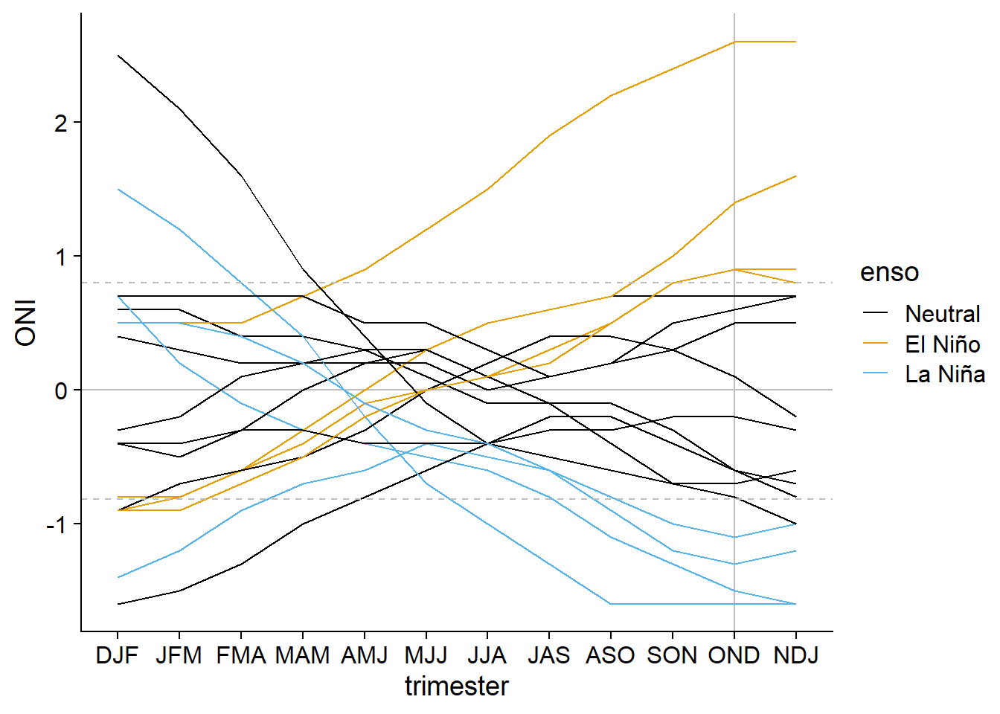
ensodata2 %>%
pivot_longer(1:12,
names_to = "trimester",
values_to = "ONI") %>%
mutate(trimester = factor(trimester,
levels =c("DJF","JFM","FMA","MAM","AMJ","MJJ","JJA","JAS","ASO","SON","OND","NDJ" ) )) %>%
filter(trimester %in% c("JFM", "MJJ", "OND")) %>%
ggplot(aes( season,ONI, group = trimester, color = enso))+
geom_hline(yintercept = 0)+
geom_hline(yintercept = c(-0.82,0.8), linetype = 2, color = "gray")+
geom_errorbar(aes(ymin=0, ymax = ONI), width = 0, color = "black")+
geom_point(size = 3)+
scale_color_colorblind()+
theme_half_open(font_size = 12)+
lemon::facet_rep_wrap(~trimester, ncol = 1)+
scale_y_continuous(breaks = c(-0.82,0,0.8), limits = c(-2,2.6))+
theme(axis.text.x = element_text(angle = 45, hjust = 1),
# legend.position = "top",
strip.background = element_blank())+
labs(x = "Crop Season",
y = "Oceanic Niño Index",
color = "ENSO phase (OND)")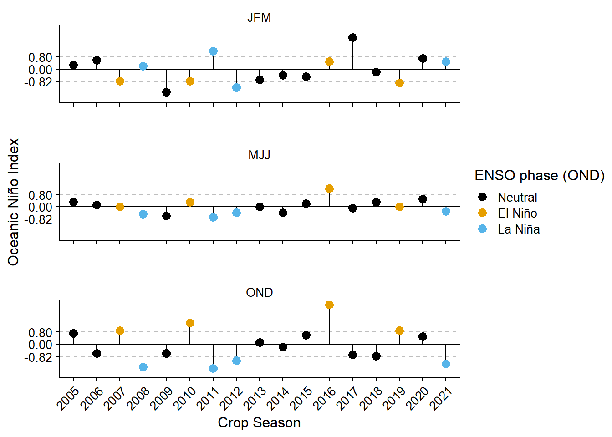
ggsave("figs/ONItrimeter.png", dpi = 600, height = 6, width = 6)Overal Map
Loading map files
SUL = ne_countries(
continent = "South America",
returnclass = "sf")
BRA <- ne_states(
country = "brazil",
returnclass = "sf"
)
sul_sf = BRA[BRA$name %in% c("Rio Grande do Sul","Santa Catarina","Paraná" ),]Summaries
Number of reports
sbr_rep %>%
summarise(n_reports = length(date_report))sbr_rep %>%
# group_by(region) %>%
summarise(n_reports = length(date_report)) #%>% # ungroup() %>%
# mutate(total = sum(n_reports),
# percent = round((n_reports/total)*100,2))Number of reports by state
sbr_rep %>%
group_by(state) %>%
summarise(n_reports = length(date_report))# %>%## `summarise()` ungrouping output (override with `.groups` argument) # group_by(region) %>%
# mutate(totaal_region = sum(n_reports)) %>%
# arrange(region)sbr_rep %>%
group_by(state, region) %>%
summarise(n_reports = length(unique(location)))%>%
arrange(-n_reports) %>%
ggplot(aes(state, n_reports, fill = region))+
geom_col(color = NA)+
labs(x = "State",
y = "Number of reports")+
scale_fill_manual(values = c("#66c2a5","#fc8d62","#8da0cb"))+
scale_y_continuous(breaks = seq(0,400,by =25))+
theme(legend.position = "none",
panel.background = element_blank(),
panel.grid = element_blank(),
panel.border = element_blank(),
axis.line.x = element_line(color = "black"),
axis.line.y = element_line(color = "black"),
axis.text.x = element_text(angle = 0))## `summarise()` regrouping output by 'state' (override with `.groups` argument)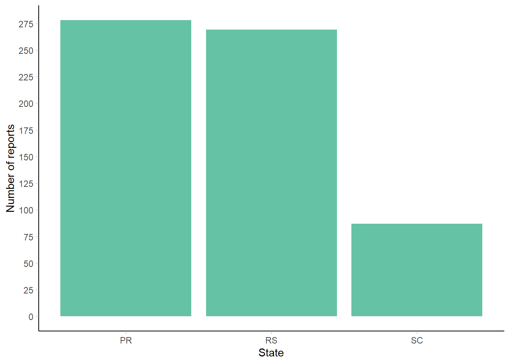
Number of reports by season
sbr_rep %>%
group_by(season) %>%
summarise(n_reports = length(date_report))## `summarise()` ungrouping output (override with `.groups` argument)sbr_rep %>%
group_by(season,state) %>%
summarise(n_reports = length(unique(location)))%>%
arrange(-n_reports) %>%
ggplot(aes(season, n_reports, fill = state))+
geom_col(color =NA)+
labs(x = "Crop season",
y = "Number of reports",
fill = "")+
scale_fill_manual(values = c("#66c2a5","#fc8d62","#8da0cb"))+
scale_y_continuous(breaks = seq(0,400,by =25))+
theme(#legend.position = "none",
panel.background = element_blank(),
panel.grid = element_blank(),
panel.border = element_blank(),
axis.line.x = element_line(color = "black"),
axis.line.y = element_line(color = "black"),
axis.text.x = element_text(angle = 20))## `summarise()` regrouping output by 'season' (override with `.groups` argument)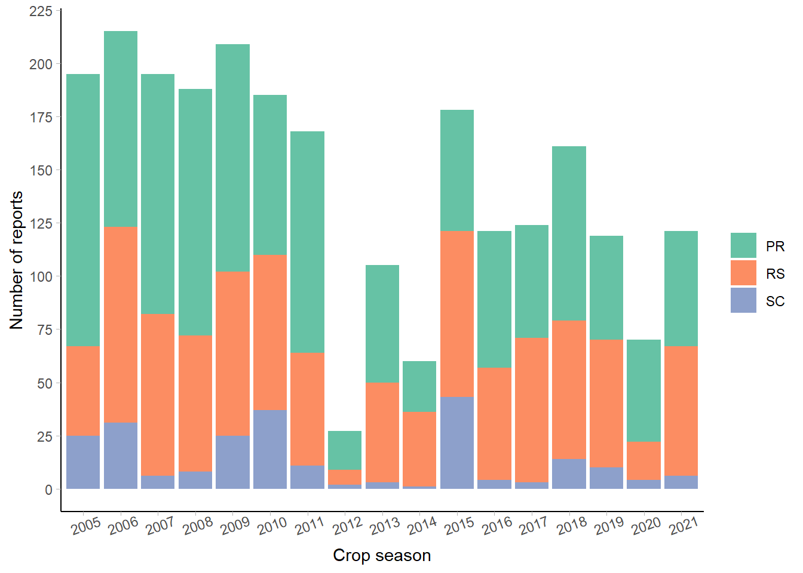
Early reports
sbr_rep %>%
group_by(season, state) %>%
summarise(min_report = min(date_report)) %>%
mutate(month_min = month(min_report, label = T),
day_min = day(min_report)) %>%
group_by(month_min) %>%
arrange(day_min) %>%
arrange(month_min)## `summarise()` regrouping output by 'season' (override with `.groups` argument)Later reports
sbr_rep %>%
group_by(season, state) %>%
summarise(max_report = max(date_report),
dap = max(days)) %>%
mutate(month_max = month(max_report, label = T),
day_max = day(max_report)) %>%
group_by(month_max) %>%
arrange(day_max) %>%
arrange(month_max) %>%
ungroup()## `summarise()` regrouping output by 'season' (override with `.groups` argument)epi_time_br = sbr_rep %>%
dplyr::group_by(season) %>%
dplyr::summarise(min_report = min(date_report),
max_report = max(date_report),
epidemic_time =as.numeric( max_report- min_report)) %>%
arrange(epidemic_time)## `summarise()` ungrouping output (override with `.groups` argument)Epidemic time: Difference between early and later reports
epi_time = sbr_rep %>%
dplyr::group_by(season) %>%
dplyr::summarise(min_report = min(date_report),
max_report = max(date_report),
epidemic_time =as.numeric( max_report- min_report)) %>%
arrange(epidemic_time) %>%
dplyr::select(-max_report,-min_report)## `summarise()` ungrouping output (override with `.groups` argument)epi_time sbr_rep %>%
dplyr::group_by(season,region) %>%
dplyr::summarise(min_report = min(days_sep15),
max_report = max(days_sep15),
time = as.numeric(max_report-min_report)) %>%
ggplot(aes(y = season, color= region))+
geom_errorbar(aes(xmin= min_report, xmax = max_report),
size = .8, width = .5,
position = position_dodge())+
labs(x = "Days after September 15th",
y = "Crop season",
color ="")+
scale_color_manual(values = c("#66c2a5","#fc8d62","#8da0cb"))+
scale_x_continuous(limits = c(0,275), breaks = seq(0,275,by = 25))+
theme(legend.position = "top",
panel.background = element_blank(),
panel.grid = element_blank(),
panel.border = element_blank(),
axis.line.x = element_line(color = "black"),
axis.line.y = element_line(color = "black"),
axis.text.x = element_text(angle = 0))## `summarise()` regrouping output by 'season' (override with `.groups` argument)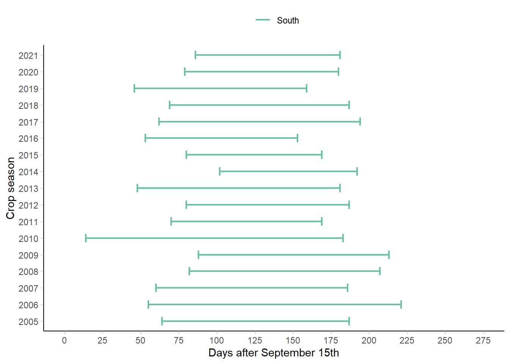
# ggsave("figs/epidemic_rage.png", dpi=600, height = 6, width = 4)sbr_rep %>%
dplyr::group_by(season,state) %>%
dplyr::summarise(min_report = min(days_sep15),
max_report = max(days_sep15)
# time = as.numeric(max_report-min_report)
) %>%
pivot_longer(3:4,
names_to = "min_max",
values_to = "time") %>%
ggplot(aes(time, fill = min_max))+
geom_density(alpha = 0.3)## `summarise()` regrouping output by 'season' (override with `.groups` argument)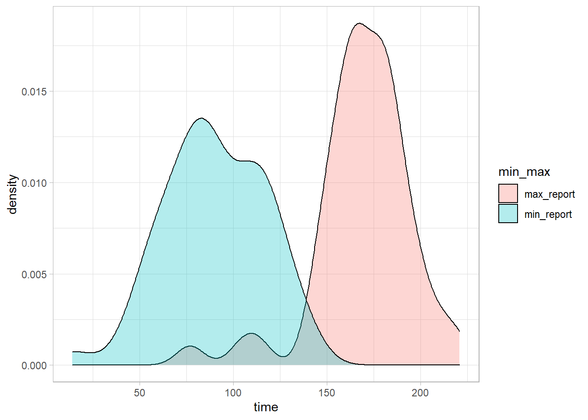
Number of reports per day
sbr_rep %>%
dplyr::group_by(season, date_report) %>%
dplyr::summarise(count = n()) %>%
arrange(-count)## `summarise()` regrouping output by 'season' (override with `.groups` argument)Max Number of reports per week
sbr_rep %>%
dplyr::group_by(season, week, state) %>%
dplyr::summarise(count = n()) %>%
ungroup() %>%
dplyr::filter(count == max(count))## `summarise()` regrouping output by 'season', 'week' (override with `.groups` argument)Mean Number of reports per day
sbr_rep %>%
group_by(season, date_report) %>%
summarise(count = n()) %>%
ungroup() %>%
# group_by(region) %>%
summarise(mean = mean(count))## `summarise()` regrouping output by 'season' (override with `.groups` argument)Mean number of reports per day per state
sbr_rep %>%
group_by(season, date_report, state) %>%
summarise(count = n()) %>%
group_by(state) %>%
summarise(mean = mean(count))## `summarise()` regrouping output by 'season', 'date_report' (override with `.groups` argument)## `summarise()` ungrouping output (override with `.groups` argument)Maximum number of reports in a same day
sbr_rep %>%
group_by(season, date_report, region) %>%
summarise(count = n()) %>%
ungroup() %>%
filter(count == max(count))## `summarise()` regrouping output by 'season', 'date_report' (override with `.groups` argument)Planting week after Sep 15th (Median)
pd = sbr_rep %>%
mutate(plant_week = week(start_date)-37) %>%
group_by(state) %>%
summarise(pd = median(plant_week))## `summarise()` ungrouping output (override with `.groups` argument) # ggplot(aes(plant_week))+
# geom_histogram()+
# facet_wrap(~state)
pd Planting date by year
sbr_rep %>%
mutate(planting_daymonth = format(as.Date(start_date), "%d-%m")) %>%
mutate(planting_month = month(start_date)) %>%
filter(planting_month != 8) %>%
group_by(season) %>%
mutate(total = n()) %>%
group_by(season, planting_month) %>%
summarise(count = (n()/total)*100) %>%
# mutate(planting_daymonth = factor(planting_daymonth, levels = c("07-08", "07-09", "21-09","01-10", "07-10", "21-10","07-11","21-11","07-12","21-12") )) %>%
ggplot(aes(planting_month,season, fill = count))+
geom_tile(color = "white",size =1)+
scale_fill_viridis_c()+
labs(x = "Mês de plantio",
y = "Safra",
fill = "Porcentagem\ndos plantios")+
theme_minimal_hgrid()+
coord_flip()## `summarise()` regrouping output by 'season', 'planting_month' (override with `.groups` argument)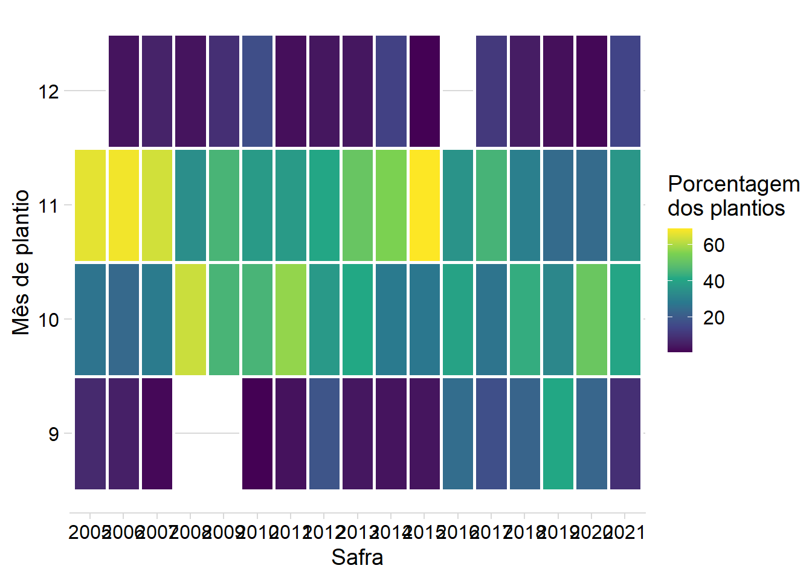
# ggsave("figs/planting_dates.png", dpi = 600, height = 3, width =10)Convert coordinates to UTM
source("coord_transform.R")
lat = sbr_rep$lat
lon = sbr_rep$lon
# new_coord = longlat_to_UTM(long = sbr_rep$lon, lat =sbr_rep$lat , units = 'm')
# sbr_rep$lat_utm = new_coord$y
# sbr_rep$lon_utm = new_coord$x
xy <- data.frame(ID = 1:(length(lat)), lon, lat)
coordinates(xy) <- c("lon", "lat")
proj4string(xy) <- CRS("+proj=longlat +datum=WGS84")
res <- spTransform(xy, CRS("+proj=utm +zone=22 ellps=WGS84"))## Warning in showSRID(uprojargs, format = "PROJ", multiline = "NO"): Discarded
## datum Unknown based on WGS84 ellipsoid in CRS definitioncoords_utm = as.data.frame(res)
sbr_rep$lat_utm = 1e+07 + coords_utm$lat
sbr_rep$lon_utm = coords_utm$lonTemporal aspects
Number of cases by month
sbr_rep %>%
group_by(season, month) %>%
summarise(count = n()
) %>%
ggplot(aes(month,count)
)+
geom_bar(stat = "identity",
position = "dodge",
color = "white",
size = .5)+
scale_fill_manual(values = c("black", "gray40"))+
facet_wrap(~season)+
labs(x = "Month",
y = "Reports count",
fill = "Season"
)+
theme(axis.text.x = element_text(angle = 45, hjust = 1),
legend.position = "none"
)## `summarise()` regrouping output by 'season' (override with `.groups` argument)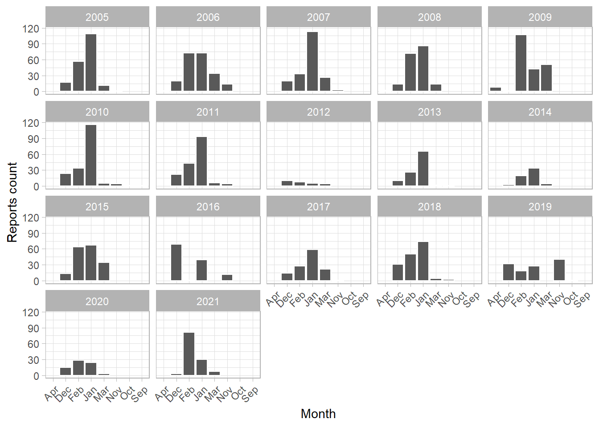
# ggsave("figs/fig1.png", dpi = 600, height = 8, width = 6) Phenological state
sbr_rep %>%
mutate(Phen_state = as.character(Phen_state)) %>%
mutate(Phen_state2 = case_when(Phen_state %in% c("VC","V1", "V2", "V3", "Vn") ~ "Vegetative",
Phen_state %in% c("R6","R7", "R8", "R9") ~ "Late reproductive",
!Phen_state %in% c("VC","V1", "V2", "V3", "Vn","R6","R7", "R8", "R9", "Vn") ~ Phen_state),
Phen_state2 = factor(Phen_state2,
levels = c("Vegetative","R1","R2","R3","R4","R5","Late reproductive"))) %>%
group_by(Phen_state2, season) %>%
summarise(n())## `summarise()` regrouping output by 'Phen_state2' (override with `.groups` argument)library(ggmosaic)## Warning: package 'ggmosaic' was built under R version 4.0.5##
## Attaching package: 'ggmosaic'## The following object is masked from 'package:GGally':
##
## happy## The following object is masked from 'package:raster':
##
## mosaicsbr_rep %>%
mutate(Phen_state = as.character(Phen_state)) %>%
mutate(Phen_state2 = case_when(Phen_state %in% c("VC","V1", "V2", "V3", "Vn") ~ "Vegetative",
Phen_state %in% c("R6","R7", "R8", "R9") ~ "Late reproductive",
!Phen_state %in% c("VC","V1", "V2", "V3", "Vn","R6","R7", "R8", "R9", "Vn") ~ Phen_state),
Phen_state2 = factor(Phen_state2,
levels = c("Vegetative","R1","R2","R3","R4","R5","Late reproductive"))
# levels = c("Late reproductive","R5","R4","R3","R2","R1","Vegetative"))
) %>%
ggplot()+
geom_mosaic(aes(x = product(Phen_state2, season), fill=Phen_state2),
alpha =1, size =1.2)+
scale_fill_brewer(direction = -1, palette = "Spectral",
breaks = c("Late reproductive","R5","R4","R3","R2","R1","Vegetative"))+
labs(y ="Phenological stages",
x = "Crop season",
fill ="",
color ="")+
# scale_y_discrete()+
theme_half_open()+
theme(axis.text.x = element_text(angle = 45, hjust = 1))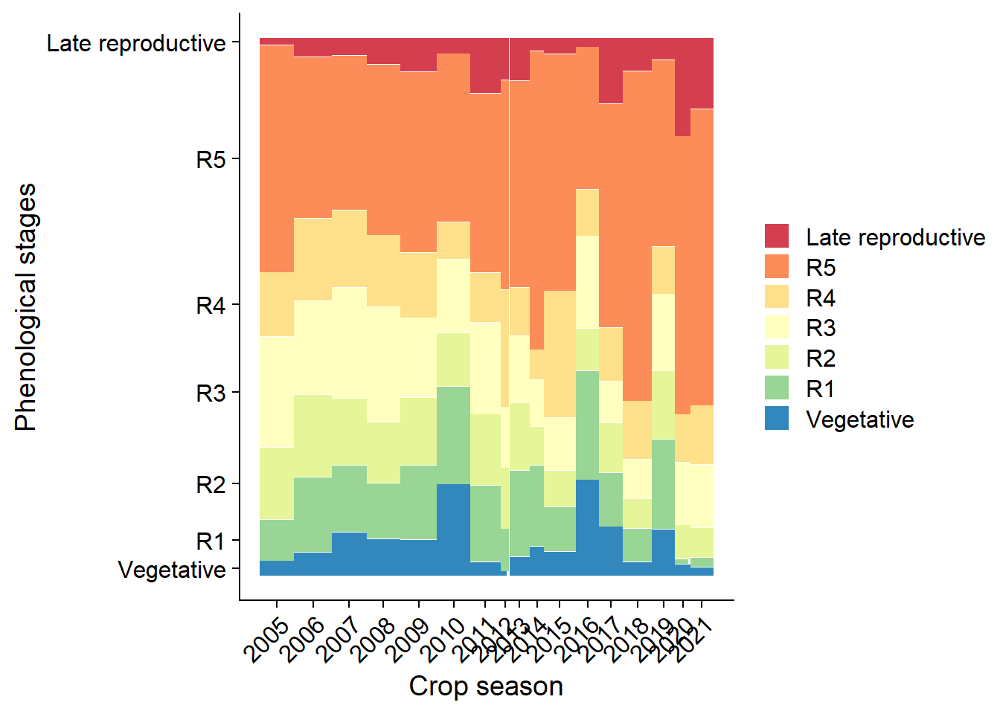
ggsave("figs/phen_cout.png", dpi = 600, height = 6, width = 10)Number of cases by day
sbr_rep %>%
group_by(season, week,region) %>%
summarise(count = n()
) %>%
ggplot(aes(week, count,
group = season, color = season )
)+
geom_line(size =0.5)+
geom_point()+
facet_wrap(~region)+
scale_fill_colorblind()+
scale_color_viridis(discrete = T)+
scale_x_continuous(breaks = seq(0,240, 30))+
# facet_wrap(~season, ncol = 1)+
labs(x = "Days after Sep 15th",
y = "Daily reports count")+
theme(legend.position = "none", text = element_text(size = 14)
)## `summarise()` regrouping output by 'season', 'week' (override with `.groups` argument)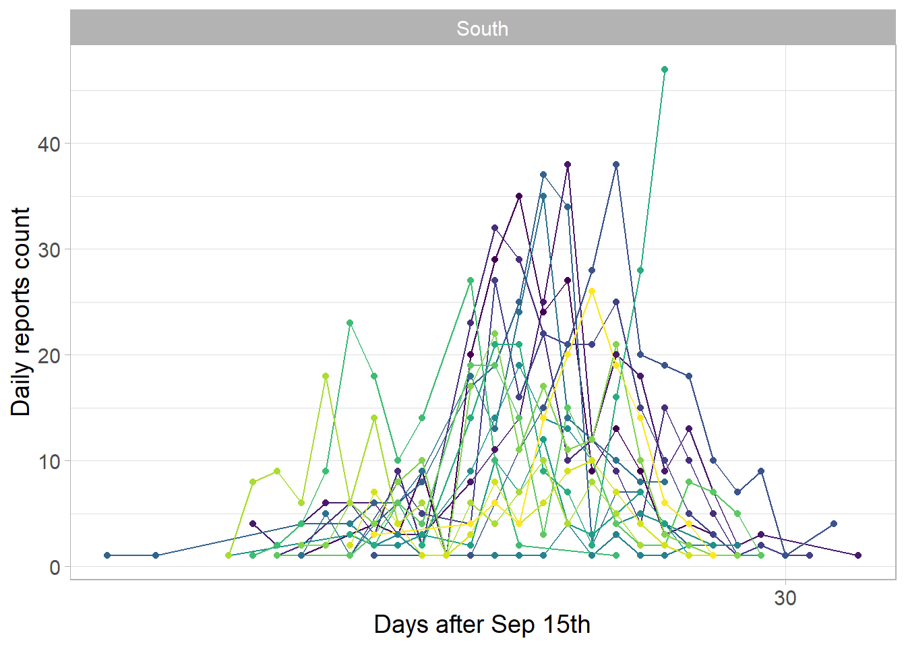
temp_lines_df = sbr_rep %>%
group_by(season, days_sep15) %>%
dplyr::summarise(count = n()) %>%
group_by(season) %>%
dplyr::mutate(comulatice_prevalence = cumsum(count),
total = max(cumsum(count)),
days_sep15 = as.numeric(days_sep15)) %>%
full_join(ensodata2)## `summarise()` regrouping output by 'season' (override with `.groups` argument)## Joining, by = "season"ggplot(data = temp_lines_df,
aes(days_sep15, comulatice_prevalence, group = season, color = enso))+
# geom_vline(xintercept = c(100,130), linetype = 2, color = "gray40")+
geom_line(size = 0.3)+
geom_text_repel(data = temp_lines_df %>%
filter(days_sep15 == last(days_sep15)),
aes(x = days_sep15, y = comulatice_prevalence,
label = season, group = season ),
segment.size = 0.2,
force = 1,
hjust = "right",
direction = "y",
size = 2.5,
point.padding = 0.2,
seed = 1,
fontface = "bold",
show.legend = F,
# color = "darkred"
)+
# geom_dl(aes(label = season), method = list(dl.combine( "last.points")), cex = 2)+
scale_x_continuous(breaks = seq(10,240, 30), limits =c(0,240))+
labs(x = "Days after Sep 15th",
y = "Prevalence",
color = "",
alpha="")+
theme(legend.position = "right", text = element_text(size = 14)
)+
# facet_wrap(~enso, ncol =1)+
scale_color_colorblind()+
theme_half_open()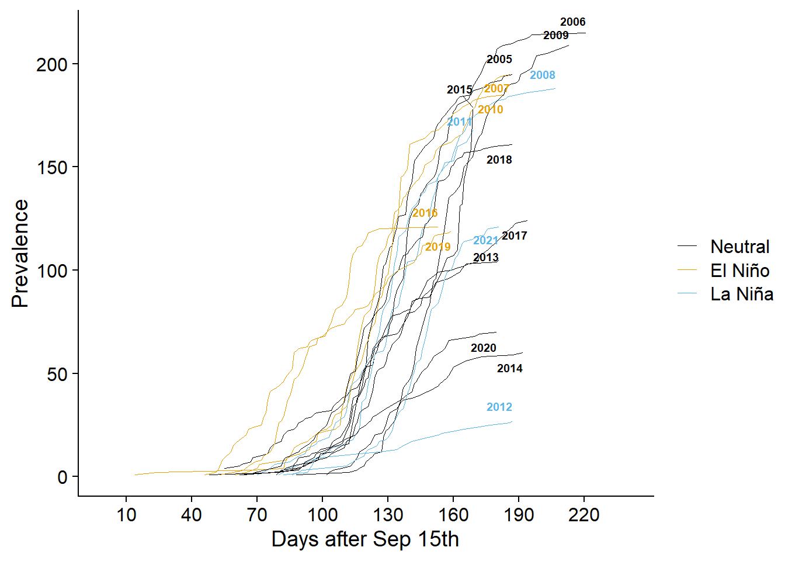
ggsave("figs/daily_prevalece.png", dpi = 600, height = 5, width = 8)Time to firsr report
min_sep15 = sbr_rep %>%
group_by(season) %>%
summarise(`Time to 1st report` = as.numeric(min(days_sep15))) %>%
arrange(`Time to 1st report`)## `summarise()` ungrouping output (override with `.groups` argument)min_sep15median(min_sep15$`Time to 1st report`)## [1] 69max_prevalance = sbr_rep %>%
group_by(season, days_sep15, region) %>%
summarise(count = n()) %>%
group_by(season, region) %>%
mutate(max_prev = cumsum(count)) %>%
filter(max_prev == max(max_prev)) %>%
dplyr::select(-days_sep15, -count)## `summarise()` regrouping output by 'season', 'days_sep15' (override with `.groups` argument)max_prev = max_prevalance %>%
ggplot(aes(as.numeric(season), max_prev, color = region))+
geom_smooth(method = "gam", alpha = 0.1, size =2, formula = y~s(x))+
geom_point(size =3)+
labs(y = "Max_prevalence", x = "season")+
scale_color_colorblind()
max_prev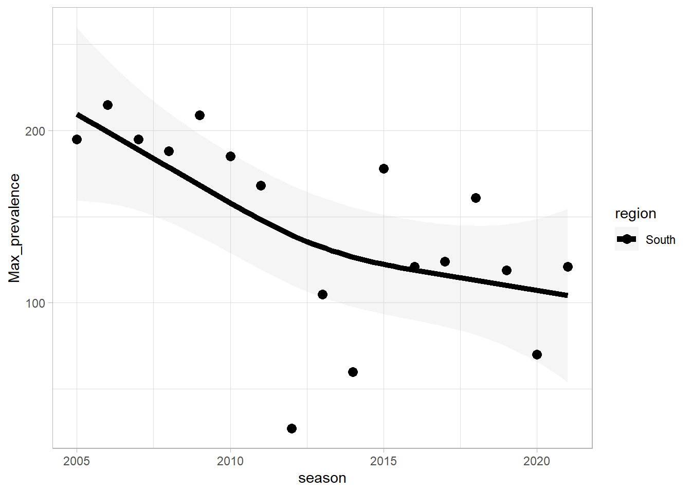
Daily
Number or municipality by states
n_mun = sbr_rep %>%
group_by(state) %>%
summarise(n_mun = length(unique(location)))# %>%## `summarise()` ungrouping output (override with `.groups` argument) # group_by(state) %>%
# summarise(n_mun = max(n_mun))sbr_rep %>%
group_by(season, days_sep15) %>%
dplyr::summarise(count = n()) %>%
group_by(season) %>%
dplyr::mutate(comulatice_prevalence = cumsum(count),
days_sep15 = days_sep15 - min(days_sep15)
) %>%
ggplot(aes(days_sep15, comulatice_prevalence))+
geom_vline(xintercept = c(90,120), linetype = 2, color = "gray40")+
geom_line(size = 1)+
scale_color_viridis(discrete = T)+
scale_x_continuous(breaks = seq(0,240, 30))+
facet_wrap(~season)+
labs(x = "Days after Sep 15th",
y = "Cumulative reports count",
color = "")+
theme(legend.position = "right", text = element_text(size = 14)
)## `summarise()` regrouping output by 'season' (override with `.groups` argument)
Infection rate
data_for_inf_br = sbr_rep %>%
group_by(season, days_sep15) %>%
summarise(count = n()) %>%
# left_join(n_mun) %>%
group_by(season) %>%
mutate(cum_prevalence = cumsum(count)/634, #(max(cumsum(count))),
days_sep15 = days_sep15 - min(days_sep15)
) %>%
mutate(week = as.numeric(days_sep15))## `summarise()` regrouping output by 'season' (override with `.groups` argument)fitted_curves_br = fit_multi(time_col = "week",
intensity_col = "cum_prevalence",
data = data_for_inf_br,
strata_cols = c("season"),
starting_par = list(y0 = 0.001, r = 0.05, K = 0.4),
nlin = T,
estimate_K = T)## Warning in log(y0/K): NaNs produzidos
## Warning in log(y0/K): NaNs produzidos
## Warning in log(y0/K): NaNs produzidos
## Warning in log(y0/K): NaNs produzidos
## Warning in log(y0/K): NaNs produzidos
## Warning in log(y0/K): NaNs produzidos
## Warning in log(y0/K): NaNs produzidos
## Warning in log(y0/K): NaNs produzidos
## Warning in log(y0/K): NaNs produzidos
## Warning in log(y0/K): NaNs produzidos
## Warning in log(y0/K): NaNs produzidos## Registered S3 method overwritten by 'DescTools':
## method from
## reorder.factor gdata## Warning in log(y0/K): NaNs produzidos
## Warning in log(y0/K): NaNs produzidos
## Warning in log(y0/K): NaNs produzidos
## Warning in log(y0/K): NaNs produzidos
## Warning in log(y0/K): NaNs produzidos
## Warning in log(y0/K): NaNs produzidos
## Warning in log(y0/K): NaNs produzidos
## Warning in log(y0/K): NaNs produzidos
## Warning in log(y0/K): NaNs produzidos
## Warning in log(y0/K): NaNs produzidos
## Warning in log(y0/K): NaNs produzidos
## Warning in log(y0/K): NaNs produzidos
## Warning in log(y0/K): NaNs produzidos
## Warning in log(y0/K): NaNs produzidos
## Warning in log(y0/K): NaNs produzidos
## Warning in log(y0/K): NaNs produzidos
## Warning in log(y0/K): NaNs produzidos
## Warning in log(y0/K): NaNs produzidos
## Warning in log(y0/K): NaNs produzidos
## Warning in log(y0/K): NaNs produzidos
## Warning in log(y0/K): NaNs produzidos
## Warning in log(y0/K): NaNs produzidos
## Warning in log(y0/K): NaNs produzidos
## Warning in log(y0/K): NaNs produzidos
## Warning in log(y0/K): NaNs produzidos
## Warning in log(y0/K): NaNs produzidos
## Warning in log(y0/K): NaNs produzidos
## Warning in log(y0/K): NaNs produzidos
## Warning in log(y0/K): NaNs produzidos
## Warning in log(y0/K): NaNs produzidos
## Warning in log(y0/K): NaNs produzidos
## Warning in log(y0/K): NaNs produzidos
## Warning in log(y0/K): NaNs produzidos
## Warning in log(y0/K): NaNs produzidos
## Warning in log(y0/K): NaNs produzidos
## Warning in log(y0/K): NaNs produzidos
## Warning in log(y0/K): NaNs produzidos
## Warning in log(y0/K): NaNs produzidos
## Warning in log(y0/K): NaNs produzidos
## Warning in log(y0/K): NaNs produzidos
## Warning in log(y0/K): NaNs produzidos
## Warning in log(y0/K): NaNs produzidos
## Warning in log(y0/K): NaNs produzidos
## Warning in log(y0/K): NaNs produzidos
## Warning in log(y0/K): NaNs produzidos
## Warning in log(y0/K): NaNs produzidos
## Warning in log(y0/K): NaNs produzidos
## Warning in log(y0/K): NaNs produzidos
## Warning in log(y0/K): NaNs produzidos
## Warning in log(y0/K): NaNs produzidos
## Warning in log(y0/K): NaNs produzidos
## Warning in log(y0/K): NaNs produzidos
## Warning in log(y0/K): NaNs produzidos
## Warning in log(y0/K): NaNs produzidos
## Warning in log(y0/K): NaNs produzidos
## Warning in log(y0/K): NaNs produzidos
## Warning in log(y0/K): NaNs produzidos
## Warning in log(y0/K): NaNs produzidos
## Warning in log(y0/K): NaNs produzidos
## Warning in log(y0/K): NaNs produzidos
## Warning in log(y0/K): NaNs produzidos
## Warning in log(y0/K): NaNs produzidosfitted_curves_br$Data %>%
left_join(fitted_curves_br$Parameters) %>%
# group_by(season) %>%
# filter(best_model==1) %>%
# filter(RSE==min(RSE)) %>%
filter(model == "Logistic") %>%
ggplot(aes(time,predicted))+
geom_point(aes(time,y), color ="gray70")+
geom_line(size = 1)+
scale_color_colorblind()+
facet_wrap(~season)+
labs(x = "Days after first report", y = "Prevalence", color ="Model", linetype = "State")+
ylim(0,1)+
theme(
legend.position = "right", text = element_text(size = 12),
strip.text = element_text(color = "black"),
strip.background = element_rect(fill = "white")
)## Joining, by = c("season", "model")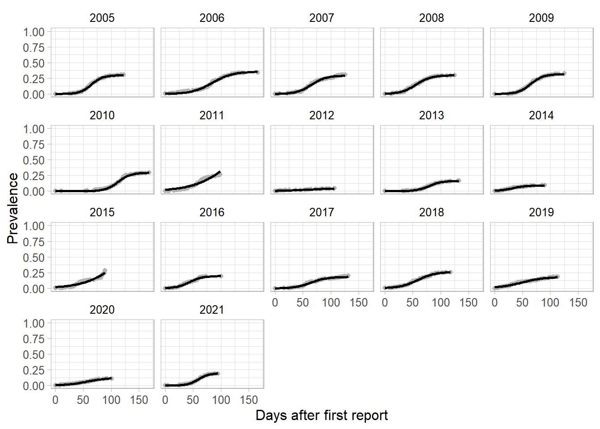
# ggsave("figs/fitted_models.png", height = 6, width = 8)r = fitted_curves_br$Parameters %>%
filter(model == "Logistic") %>%
dplyr::select(season, y0,r, K) %>%
full_join(
sbr_rep %>%
group_by(season) %>%
summarise(n_reports = length(unique(location)))
) %>%
full_join(epi_time_br) %>%
mutate(Rate = (r*K)) %>%
# mutate(Rate = (r/n_reports)*100) %>%
dplyr::select(season, Rate) %>%
arrange(Rate)## `summarise()` ungrouping output (override with `.groups` argument)## Joining, by = "season"
## Joining, by = "season"rfitted_curves_br$Parameters %>%
filter(model == "Logistic") %>%
dplyr::select(season, r, K) %>%
full_join(
sbr_rep %>%
group_by(season) %>%
summarise(n_reports = length(unique(location)))
) %>%
full_join(epi_time_br) %>%
mutate(Rate = (r*K)) %>%
full_join(min_sep15) %>%
dplyr::select( season,`Time to 1st report`, n_reports, epidemic_time, Rate) %>%
arrange(Rate)## `summarise()` ungrouping output (override with `.groups` argument)## Joining, by = "season"
## Joining, by = "season"
## Joining, by = "season"sbr_rep %>%
group_by(season) %>%
summarise(n_reports = length(unique(location))) %>%
ungroup() %>%
summarise(median(n_reports))## `summarise()` ungrouping output (override with `.groups` argument)fitted_curves_br$Parameters %>%
filter(model == "Logistic") %>%
dplyr::select(season, r, K) %>%
full_join(
sbr_rep %>%
group_by(season) %>%
summarise(n_reports = length(unique(location)))
) %>%
full_join(epi_time_br) %>%
mutate(Rate = (r*K)) %>%
full_join(min_sep15) %>%
dplyr::select( season,`Time to 1st report`, n_reports, epidemic_time, Rate) %>%
full_join(ensodata2) %>%
group_by(enso) %>%
summarise(median(`Time to 1st report`),
median(n_reports),
median(epidemic_time),
mean(Rate))## `summarise()` ungrouping output (override with `.groups` argument)## Joining, by = "season"
## Joining, by = "season"
## Joining, by = "season"
## Joining, by = "season"## `summarise()` ungrouping output (override with `.groups` argument)AUDPC
audpc = sbr_rep %>%
group_by(season, days_sep15) %>%
summarise(count = n()) %>%
group_by(season) %>%
mutate(cum_prevalence = cumsum(count)/634) %>%
group_by(season) %>%
mutate(days_sep15 = as.numeric(days_sep15)) %>%
summarise(audpc = AUDPC(cum_prevalence, days_sep15)/(max(days_sep15)-min(days_sep15)))## `summarise()` regrouping output by 'season' (override with `.groups` argument)## `summarise()` ungrouping output (override with `.groups` argument)audpc%>%
ggplot(aes(as.numeric(season), audpc))+
# geom_line(size = 1)+
# geom_point(size = 3)+
geom_col(width = 0.5)+
# geom_smooth(alpha = 0.1, size =1.5)+
scale_color_colorblind()+
scale_fill_colorblind()+
scale_x_continuous(breaks = c(seq(2005, 2021, by = 1)))+
labs(x = "Harvest season", y = "AUDPC")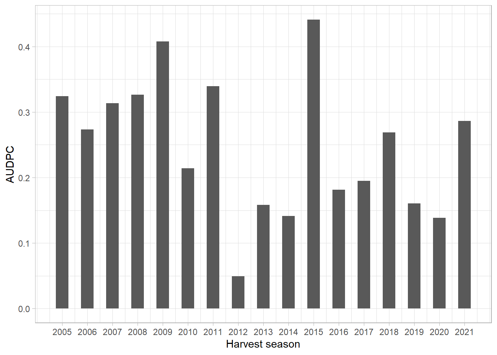
time to prevalence
time_2.5 = sbr_rep %>%
group_by(season, days_sep15) %>%
summarise(count = n()) %>%
# left_join(n_mun) %>%
group_by(season) %>%
mutate(cum_prevalence = cumsum(count)/max(cumsum(count))) %>%
group_by(season) %>%
filter(cum_prevalence <= 0.025) %>%
summarise(time_2.5 = as.numeric(max(days_sep15)))## `summarise()` regrouping output by 'season' (override with `.groups` argument)## `summarise()` ungrouping output (override with `.groups` argument)time_5 = sbr_rep %>%
group_by(season, days_sep15, state) %>%
summarise(count = n()) %>%
# left_join(n_mun) %>%
group_by(season) %>%
mutate(cum_prevalence = cumsum(count)/max(cumsum(count))) %>%
group_by(season) %>%
filter(cum_prevalence <= 0.05) %>%
summarise(time_5 = as.numeric(max(days_sep15)))## `summarise()` regrouping output by 'season', 'days_sep15' (override with `.groups` argument)
## `summarise()` ungrouping output (override with `.groups` argument)time_10 = sbr_rep %>%
group_by(season, days_sep15) %>%
summarise(count = n()) %>%
# left_join(n_mun) %>%
group_by(season) %>%
mutate(cum_prevalence = cumsum(count)/max(cumsum(count))) %>%
group_by(season) %>%
filter(cum_prevalence <= 0.1) %>%
summarise(time_10 = as.numeric(max(days_sep15)))## `summarise()` regrouping output by 'season' (override with `.groups` argument)
## `summarise()` ungrouping output (override with `.groups` argument)all_times = time_2.5 %>%
full_join(time_5) %>%
left_join(time_10)## Joining, by = "season"## Joining, by = "season"all_timesPrevalence to time
prev_90 =sbr_rep %>%
group_by(season, days_sep15) %>%
summarise(count = n()) %>%
# left_join(n_mun) %>%
group_by(season) %>%
mutate(cum_prevalence = cumsum(count)) %>%
group_by(season) %>%
filter(days_sep15 <= as.numeric(100)) %>%
summarise(prev_100 = as.numeric(max(cum_prevalence))) ## `summarise()` regrouping output by 'season' (override with `.groups` argument)## `summarise()` ungrouping output (override with `.groups` argument)prev_120 =sbr_rep %>%
group_by(season, days_sep15) %>%
summarise(count = n()) %>%
# left_join(n_mun) %>%
group_by(season) %>%
mutate(cum_prevalence = cumsum(count)) %>%
group_by(season) %>%
filter(days_sep15 <= as.numeric(130)) %>%
summarise(prev_130 = as.numeric(max(cum_prevalence)))## `summarise()` regrouping output by 'season' (override with `.groups` argument)
## `summarise()` ungrouping output (override with `.groups` argument)prev_all = prev_90 %>%
full_join(prev_120) %>%
mutate_if(is.numeric, ~replace(., is.na(.), 0))## Joining, by = "season"prev_allCumulative reports
weeks = sort(unique(sbr_rep$week))
sbr_rep_cum = data.frame()
for(i in 1:(length(weeks))){
cumulative = sbr_rep %>%
ungroup() %>%
filter(week <= weeks[i]) %>%
dplyr::select(season,state,Phen_state,lat_utm, lon_utm, lat, lon, days,month, days_sep15) %>%
mutate(week = weeks[i])
sbr_rep_cum = sbr_rep_cum %>%
bind_rows(cumulative)
}
# max(sbr_rep$days)
# sbr_rep_cum$month = factor(sbr_rep_cum$month, levels = c("Set", "Oct", "Nov", "Dec", "Jan", "Feb", "Mar","Apr"))Visualization
sbr_rep_cum %>%
group_by(season, week) %>%
summarise(count = n()
) %>%
ggplot(aes(week,count)
)+
geom_bar(stat = "identity",
position = "dodge",
color = "black",
size = .5)+
scale_fill_manual(values = c("black", "gray40"))+
facet_wrap(~season)+
labs(x = "Month",
y = "Reports count",
fill = "Season"
)+
theme(axis.text.x = element_text(angle = 45, hjust = 1),
legend.position = "none"
)## `summarise()` regrouping output by 'season' (override with `.groups` argument)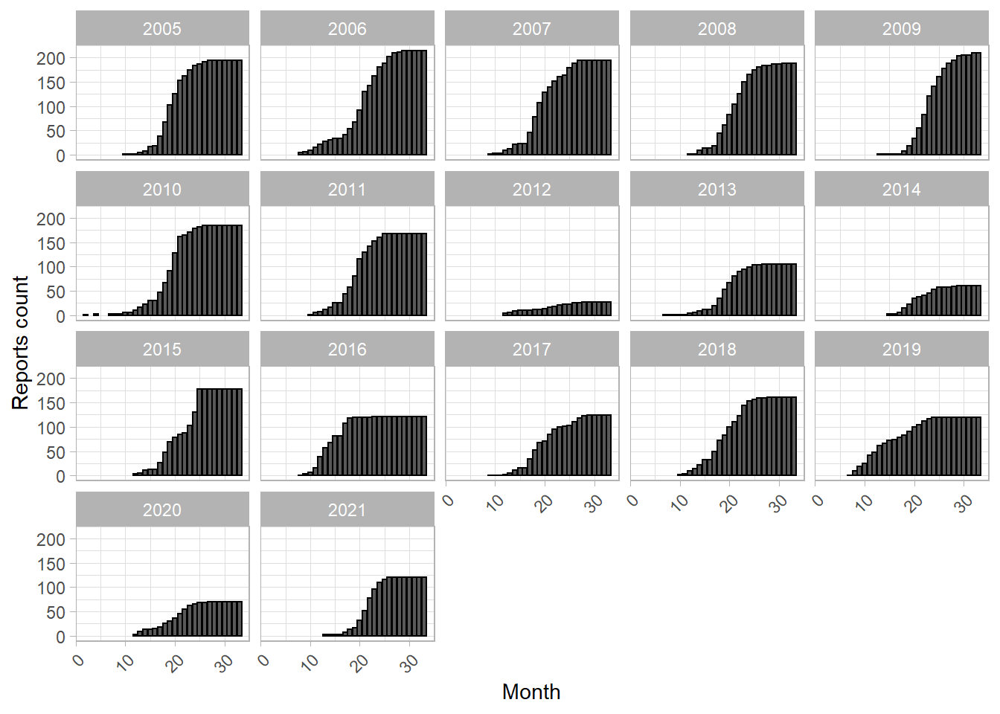
# ggsave("figs/fig3.png", dpi = 600, height = 12, width = 6)Shape BR
shape_BR = readOGR("shapefiles/shape-files-BRA","BRA_adm1" )## OGR data source with driver: ESRI Shapefile
## Source: "G:\Meu Drive\Kaique-Alves\SBR-soybean\02 - SBR_spatiotemporal-description\Data_analysis\shapefiles\shape-files-BRA", layer: "BRA_adm1"
## with 27 features
## It has 16 fieldsshape_BR@data$id = rownames(shape_BR@data)
BR_points = fortify(shape_BR)## Regions defined for each PolygonsBR_df =plyr::join(BR_points, shape_BR@data, by="id")Spatial
NND
last_nnd = sbr_rep_cum %>%
group_by(season, week) %>%
filter(n() > 1)%>%
summarise(mean_nnd = median(nndist(lon_utm/1000, lat_utm/1000))) %>%
group_by(season) %>%
filter(week == last(week)) %>%
mutate(last_nnd = mean_nnd) %>%
dplyr::select(-week, -mean_nnd)## `summarise()` regrouping output by 'season' (override with `.groups` argument)last_nndsbr_rep_cum %>%
group_by(season, week) %>%
filter(n() > 1)%>%
summarise(mean_nnd = median(nndist(lon_utm/1000, lat_utm/1000))) %>%
arrange(mean_nnd) %>%
filter(mean_nnd == max(mean_nnd))## `summarise()` regrouping output by 'season' (override with `.groups` argument)first_nnd = sbr_rep_cum %>%
group_by(season, week) %>%
filter(n() > 1)%>%
summarise(mean_nnd = median(nndist(lon_utm/1000, lat_utm/1000))) %>%
group_by(season) %>%
filter(week == first(week)) %>%
mutate(first_nnd = mean_nnd) %>%
dplyr::select(-week, -mean_nnd)## `summarise()` regrouping output by 'season' (override with `.groups` argument)first_nndsbr_rep_cum %>%
group_by(season, week) %>%
filter(n()>1)%>%
summarise(mean_nnd = median(nndist(lon_utm/1000, lat_utm/1000))) %>%
ggplot(aes(week,mean_nnd)
)+
geom_bar(stat = "identity",
position = "dodge",
color = "white",
size = .5)+
# scale_fill_colorblind() +
scale_fill_manual(values = c("black", "gray40"))+
facet_wrap(~season)+
labs(x = "Week",
y = "MEdian NND",
fill = "Season"
)+
theme(axis.text.x = element_text(angle = 0, vjust = 0),
legend.position = "none"
)## `summarise()` regrouping output by 'season' (override with `.groups` argument)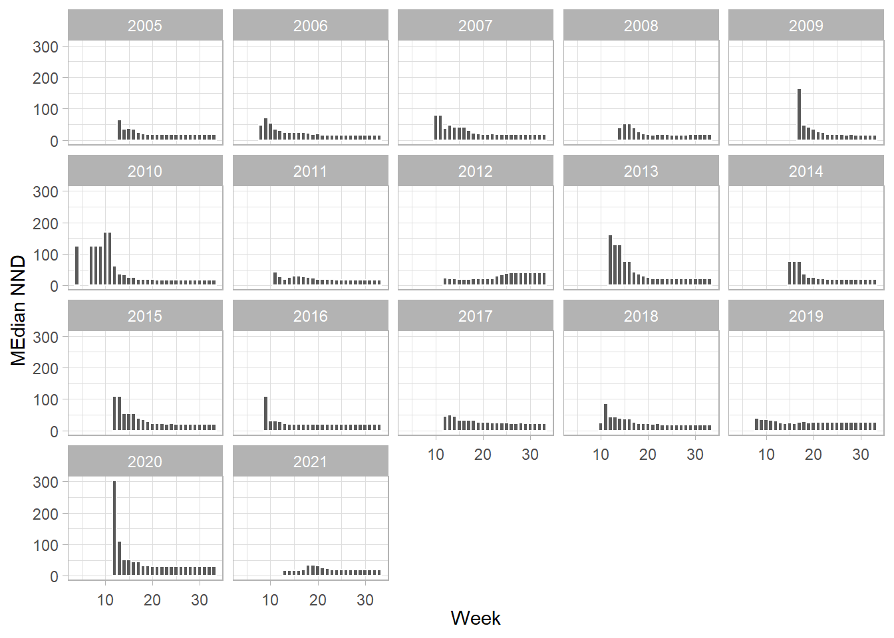
# ggsave("figs/nnd.png", dpi = 300, height = 10, width = 6)nnd = sbr_rep_cum %>%
group_by(season, week) %>%
filter(n()>1)%>%
summarise(mean_nnd = median(nndist(lon_utm/1000, lat_utm/1000))) %>%
full_join(ensodata2) %>%
ggplot(aes(week, mean_nnd, group =season, color = enso))+
geom_line(alpha = 0.2)+
geom_smooth(aes(group = enso), alpha=0.2)+
scale_color_colorblind()+
labs(x = "Week",
y = "Median NND",
color = "")+
theme(text = element_text(size = 14))+
scale_x_continuous(limits = c(5,35), breaks = seq(0,35, by = 5))+
theme_half_open()+
theme(legend.position = "bottom")## `summarise()` regrouping output by 'season' (override with `.groups` argument)## Joining, by = "season"nnd## `geom_smooth()` using method = 'loess' and formula 'y ~ x'## Warning: Removed 1 rows containing non-finite values (stat_smooth).## Warning: Removed 1 row(s) containing missing values (geom_path).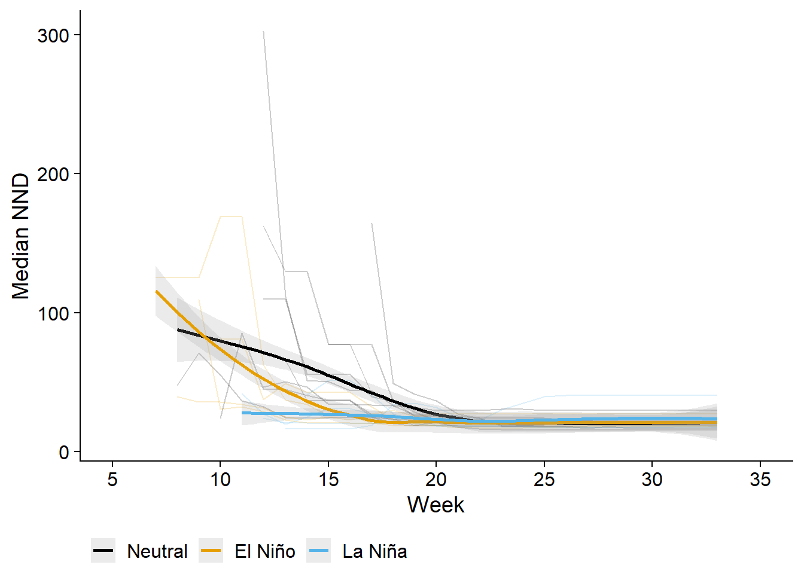
nnd_for_gam = sbr_rep_cum %>%
group_by(season, week) %>%
filter(n()>1)%>%
summarise(mean_nnd = median(nndist(lon_utm/1000, lat_utm/1000))) %>%
full_join(ensodata2)## `summarise()` regrouping output by 'season' (override with `.groups` argument)## Joining, by = "season"gam NND
lm_nnd = mgcv::gamm(mean_nnd ~ enso+s(week, by= enso),
random = list(season=~1),
family =Gamma(link = "log"),
data = nnd_for_gam)##
## Maximum number of PQL iterations: 20## iteration 1## iteration 2## iteration 3## iteration 4summary(lm_nnd$gam)##
## Family: Gamma
## Link function: log
##
## Formula:
## mean_nnd ~ enso + s(week, by = enso)
##
## Parametric coefficients:
## Estimate Std. Error t value Pr(>|t|)
## (Intercept) 3.40226 0.06156 55.263 <2e-16 ***
## ensoEl Niño -0.17574 0.11011 -1.596 0.111
## ensoLa Niña -0.20991 0.11084 -1.894 0.059 .
## ---
## Signif. codes: 0 '***' 0.001 '**' 0.01 '*' 0.05 '.' 0.1 ' ' 1
##
## Approximate significance of smooth terms:
## edf Ref.df F p-value
## s(week):ensoNeutral 4.343 4.343 83.600 <2e-16 ***
## s(week):ensoEl Niño 4.204 4.204 49.819 <2e-16 ***
## s(week):ensoLa Niña 1.000 1.000 3.702 0.0551 .
## ---
## Signif. codes: 0 '***' 0.001 '**' 0.01 '*' 0.05 '.' 0.1 ' ' 1
##
## R-sq.(adj) = 0.409
## Scale est. = 0.10862 n = 384nnd = plot_smooths(
model = lm_nnd$gam,
series = week,
comparison = enso,
transform = exp
)+
guides(fill = F, linetype =F)+
scale_color_colorblind()+
scale_fill_manual(values = c("gray50","gray50","gray50"))+
scale_linetype_manual(values = c(1,1,1))+
theme_half_open()+
geom_line(data = nnd_for_gam,
aes(week,mean_nnd, group = season, color = enso),
alpha = 0.2)+
geom_line(size =1, aes(color = enso))+
labs(x = "Week",
y = "NND (km)",
color = "",
title = "Nearest-neighbor distances")+
scale_x_continuous(limits = c(8,30), breaks = seq(5,30,by =5))+
theme(legend.position = "none")
nnd## Warning: Removed 21 row(s) containing missing values (geom_path).## Warning: Removed 53 row(s) containing missing values (geom_path).## Warning: Removed 21 row(s) containing missing values (geom_path).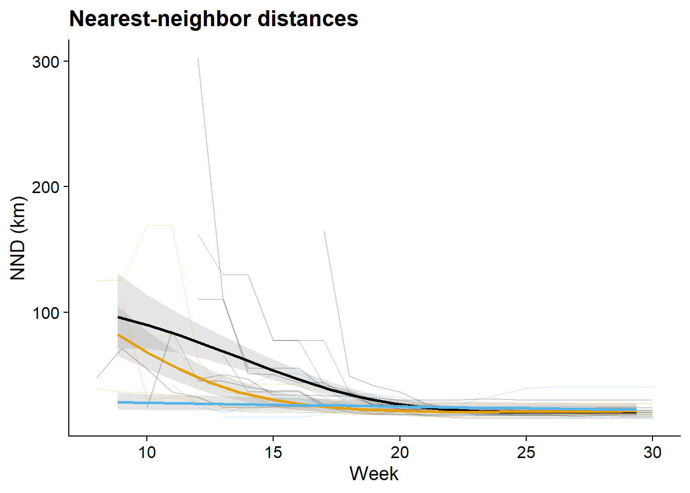
Area
Example
dat <- matrix(stats::rnorm(6), ncol = 2)
ch <- chull(dat)
coords <- dat[c(ch, ch[1]), ] # closed polygon
# plot(dat, pch=19)
# lines(coords, col= "red")
pol1 <- spPolygons(coords, crs="+proj=utm +zone=22 +datum=WGS84")
# raster::area(pol1)area_calc = function(lon, lat){
lat = as.matrix(lat)
lon = as.matrix(lon)
dat = cbind(lon,lat)
ch <- chull(dat)
coords <- dat[c(ch, ch[1]), ] # closed polygon
pol1 <- spPolygons(coords, crs="+proj=utm +zone=22 +datum=WGS84")
area1 = raster::area(pol1)
return(as.numeric(area1))
}Max area
areas_stats = sbr_rep_cum %>%
group_by(season, week) %>%
filter(n()>=3)%>%
summarise(area = area_calc(lon = lon_utm, lat = lat_utm)/1000000) %>%
# mutate(area_state = case_when(state == "PR" ~ 199307.922 ,
# state == "RS" ~281730.223 )) %>%
group_by(season) %>%
summarise(max_area = max(area), min_area = min(area))## `summarise()` regrouping output by 'season' (override with `.groups` argument)## `summarise()` ungrouping output (override with `.groups` argument)areas_stats %>%
arrange(max_area)Visualization
area_df = sbr_rep_cum %>%
group_by(season, week) %>%
filter(n()>=3)%>%
summarise(area = area_calc(lon = lon_utm, lat = lat_utm)/1000000)## `summarise()` regrouping output by 'season' (override with `.groups` argument)area_df2 = area_df %>%
full_join(ensodata2) %>%
group_by(season) %>%
mutate(dif = (`area`)-lag(area)) %>%
ungroup() %>%
filter(dif != 0)## Joining, by = "season"rate of increase in the epidemic area
area_rate = area_df2 %>%
group_by(season) %>%
summarise(rate_area = mean(dif))## `summarise()` ungrouping output (override with `.groups` argument)area = area_df2 %>%
# full_join(ensodata2) %>%
ggplot(aes(week, area/10000, group = season, color =enso))+
geom_line(alpha = 0.2)+
geom_smooth(aes(group = enso), alpha=0.2)+
scale_color_colorblind() +
labs(x = "Week",
y = expression(paste("Area 10"^4, " km²")),
color = "")+
theme(text = element_text(size = 14))+
scale_x_continuous(limits = c(5,35), breaks = seq(0,35, by = 5))+
theme_half_open()+
theme(legend.position = "bottom")
area ## `geom_smooth()` using method = 'loess' and formula 'y ~ x'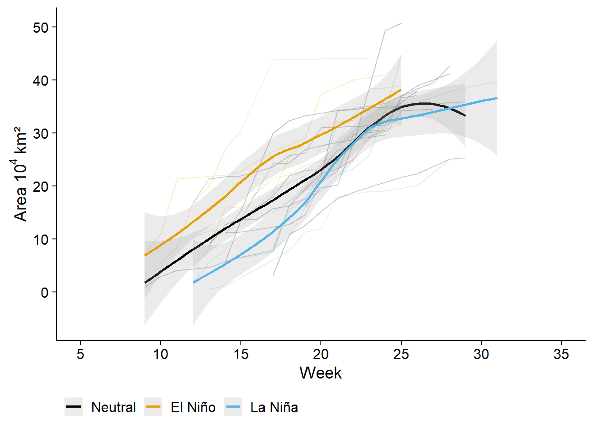
# ggsave("figs/area.png", dpi = 600, height = 4, width = 8)gam area
lm_area = mgcv::gamm(area/10000 ~ enso+s(week, by= enso),
random = list(season=~1),
family =Gamma(link = "log"),
data = area_df%>%
full_join(ensodata2))## Joining, by = "season"
## Joining, by = "season"
## Joining, by = "season"
## Joining, by = "season"##
## Maximum number of PQL iterations: 20## iteration 1## iteration 2## iteration 3## iteration 4## iteration 5## iteration 6summary(lm_area$gam)##
## Family: Gamma
## Link function: log
##
## Formula:
## area/10000 ~ enso + s(week, by = enso)
##
## Parametric coefficients:
## Estimate Std. Error t value Pr(>|t|)
## (Intercept) 3.05141 0.09308 32.783 <2e-16 ***
## ensoEl Niño 0.32475 0.16730 1.941 0.0530 .
## ensoLa Niña -0.41908 0.16801 -2.494 0.0131 *
## ---
## Signif. codes: 0 '***' 0.001 '**' 0.01 '*' 0.05 '.' 0.1 ' ' 1
##
## Approximate significance of smooth terms:
## edf Ref.df F p-value
## s(week):ensoNeutral 6.176 6.176 119.61 <2e-16 ***
## s(week):ensoEl Niño 4.697 4.697 80.66 <2e-16 ***
## s(week):ensoLa Niña 4.706 4.706 200.56 <2e-16 ***
## ---
## Signif. codes: 0 '***' 0.001 '**' 0.01 '*' 0.05 '.' 0.1 ' ' 1
##
## R-sq.(adj) = 0.764
## Scale est. = 0.10392 n = 376# plot(lm_area$gam)area =plot_smooths(
model = lm_area$gam,
series = week,
comparison = enso,
transform = exp
)+
guides(fill = F, linetype =F)+
scale_color_colorblind()+
scale_fill_manual(values = c("gray50","gray50","gray50"))+
scale_linetype_manual(values = c(1,1,1))+
theme_half_open()+
geom_line(data = area_df %>% full_join(ensodata2),
aes(week,area/10000, group = season, color = enso),
alpha = 0.2)+
geom_line(size =1, aes(color = enso))+
labs(x = "Week",
y = expression(paste("Area 10"^4, " km²")),
color = "",
title = "Epidemic area")+
scale_x_continuous(limits = c(8,30), breaks = seq(5,30,by =5))+
theme(legend.position = "bottom")## Joining, by = "season"area## Warning: Removed 9 row(s) containing missing values (geom_path).## Warning: Removed 51 row(s) containing missing values (geom_path).## Warning: Removed 9 row(s) containing missing values (geom_path).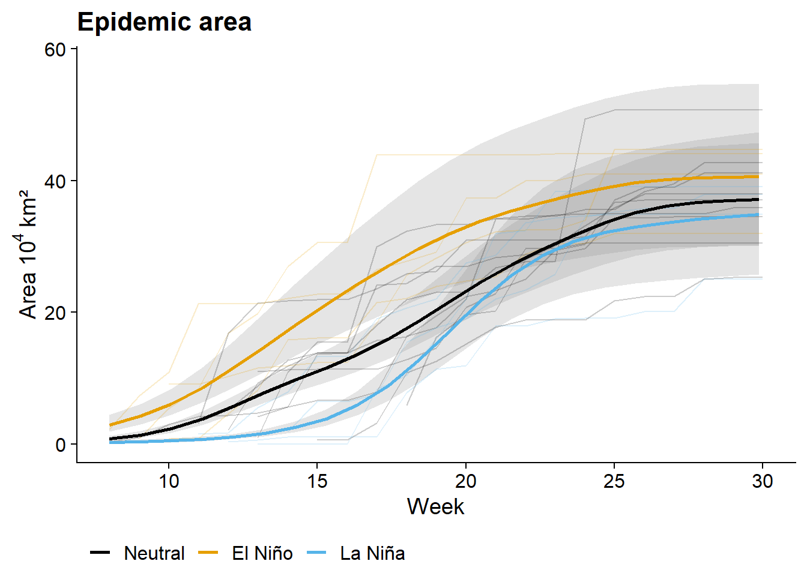
Density index
week_count = sbr_rep_cum %>%
group_by(season, week) %>%
filter(n()>=3)%>%
summarise(count = n()) %>%
# group_by(season) %>%
# dplyr::mutate(prevalence = cumsum(count)) %>%
full_join(area_df) %>%
mutate(density = count/area,
density = case_when(density>0.002 ~ 0.002,
density<=0.02 ~ density)) %>%
mutate(period = case_when(season > 2011 ~ "POSt",
season <= 2011 ~ "PRE")) %>%
full_join(ensodata2)## `summarise()` regrouping output by 'season' (override with `.groups` argument)## Joining, by = c("season", "week")## Joining, by = "season"density = week_count %>%
ggplot(aes(week, density, group = season, color=enso))+
geom_line(alpha = 0.2)+
geom_smooth(aes(group = enso), alpha=0.2, method= "gam", formula = y ~s(x))+
scale_y_log10()+
scale_color_colorblind()+
labs(y = "Density", x ="Week", color = "")+
theme(text = element_text(size = 14))+
scale_x_continuous(limits = c(5,35), breaks = seq(0,35, by = 5))+
theme_half_open()+
theme(legend.position = "bottom")
density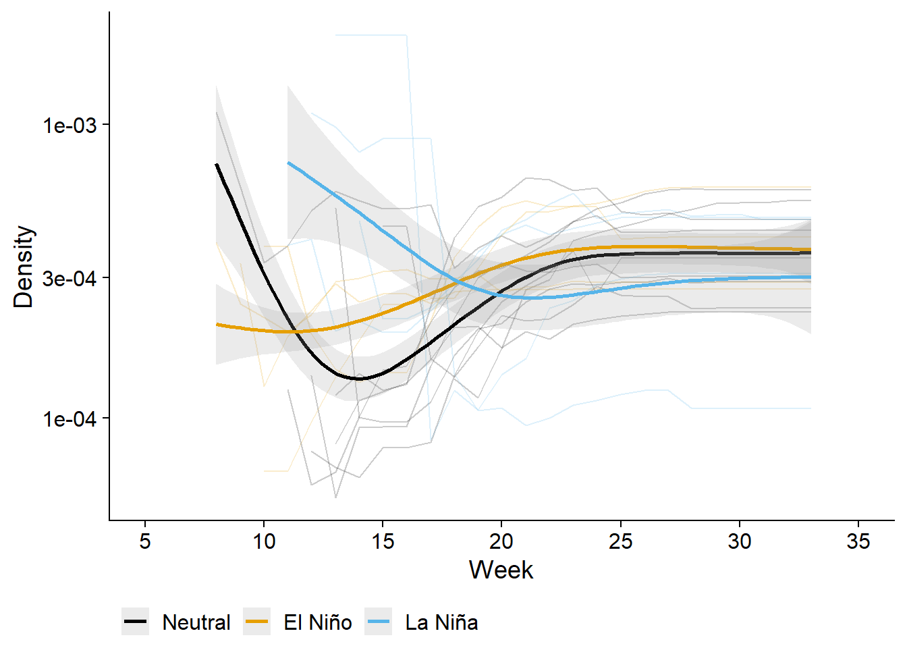 #### gam density
lm_dens = mgcv::gamm(density*1000 ~ enso+s(week, by= enso, k=10, bs= "cr"),
random = list(season=~1),
family =Gamma(link = "log"),
data = week_count)##
## Maximum number of PQL iterations: 20## iteration 1## iteration 2## iteration 3## iteration 4## iteration 5## iteration 6## iteration 7## iteration 8## iteration 9## iteration 10## iteration 11summary(lm_dens$gam)##
## Family: Gamma
## Link function: log
##
## Formula:
## density * 1000 ~ enso + s(week, by = enso, k = 10, bs = "cr")
##
## Parametric coefficients:
## Estimate Std. Error t value Pr(>|t|)
## (Intercept) -1.25009 0.09701 -12.887 <2e-16 ***
## ensoEl Niño 0.13945 0.17406 0.801 0.4236
## ensoLa Niña 0.30101 0.17569 1.713 0.0875 .
## ---
## Signif. codes: 0 '***' 0.001 '**' 0.01 '*' 0.05 '.' 0.1 ' ' 1
##
## Approximate significance of smooth terms:
## edf Ref.df F p-value
## s(week):ensoNeutral 4.972 4.972 18.679 < 2e-16 ***
## s(week):ensoEl Niño 2.866 2.866 8.661 1.87e-05 ***
## s(week):ensoLa Niña 5.983 5.983 17.815 < 2e-16 ***
## ---
## Signif. codes: 0 '***' 0.001 '**' 0.01 '*' 0.05 '.' 0.1 ' ' 1
##
## R-sq.(adj) = 0.25
## Scale est. = 0.1736 n = 376density = plot_smooths(
model = lm_dens$gam,
series = week,
comparison = enso,
transform = exp
)+
guides(fill = F, linetype =F)+
scale_color_colorblind()+
scale_fill_manual(values = c("gray50","gray50","gray50"))+
scale_linetype_manual(values = c(1,1,1))+
theme_half_open()+
geom_line(data = week_count,
aes(week,density*1000, group = season, color = enso),
alpha = 0.2)+
scale_x_continuous(limits = c(8,30), breaks = seq(5,30,by =5))+
geom_line(size =1, aes(color = enso))+
labs(x = "Week",
y = "Density",
color = "",
title = "Spatial density")+
coord_cartesian(ylim = c(0,1.2))+
theme(legend.position = "none")
density## Warning: Removed 9 row(s) containing missing values (geom_path).## Warning: Removed 51 row(s) containing missing values (geom_path).## Warning: Removed 9 row(s) containing missing values (geom_path).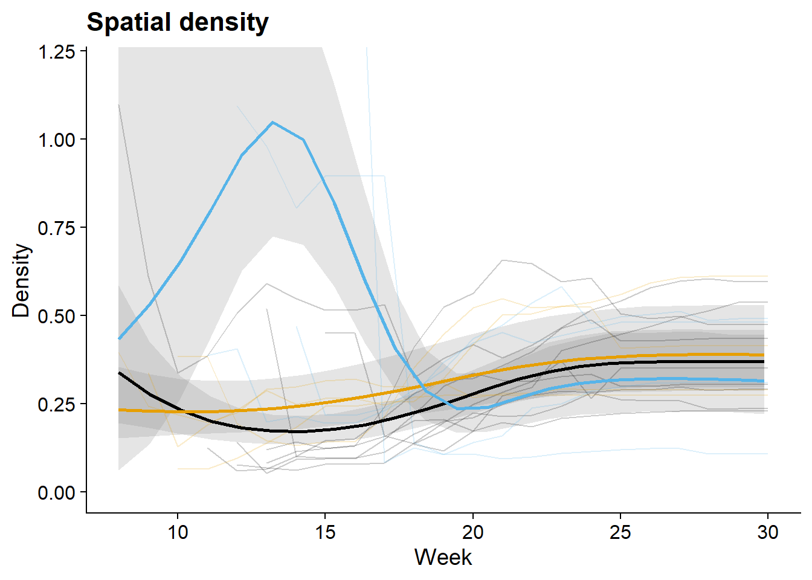
Correlation weekly area
area_df %>%
group_by(season) %>%
mutate(last_area = last(area)) %>%
group_by(week) %>%
filter(n()>2) %>%
ggplot(aes(area, last_area))+
geom_point()+
geom_abline(intercept = 0, slope = 1, color = "red")+
geom_smooth(method = "lm", se =F)+
facet_wrap(~week)+
theme(#legend.position = "none",
panel.background = element_blank(),
panel.grid = element_blank(),
panel.border = element_blank(),
axis.line.x = element_line(color = "black"),
axis.line.y = element_line(color = "black"),
axis.text.x = element_text(angle = 0))## `geom_smooth()` using formula 'y ~ x'
area_df %>%
group_by(season) %>%
mutate(last_area = last(area)) %>%
group_by(week) %>%
filter(n()>2) %>%
summarise(cor = cor.test(area, last_area)$estimate,
p_value = cor.test(area, last_area)$p.value) %>%
filter(p_value <0.05) %>%
ggplot(aes(week, cor))+
# ylim(0,1)+
geom_line()+
geom_point(aes(size = p_value))+
scale_x_continuous(breaks = seq(0,32,by = 2))+
theme(#legend.position = "none",
panel.background = element_blank(),
panel.grid = element_blank(),
panel.border = element_blank(),
axis.line.x = element_line(color = "black"),
axis.line.y = element_line(color = "black"),
axis.text.x = element_text(angle = 0)) ## `summarise()` ungrouping output (override with `.groups` argument)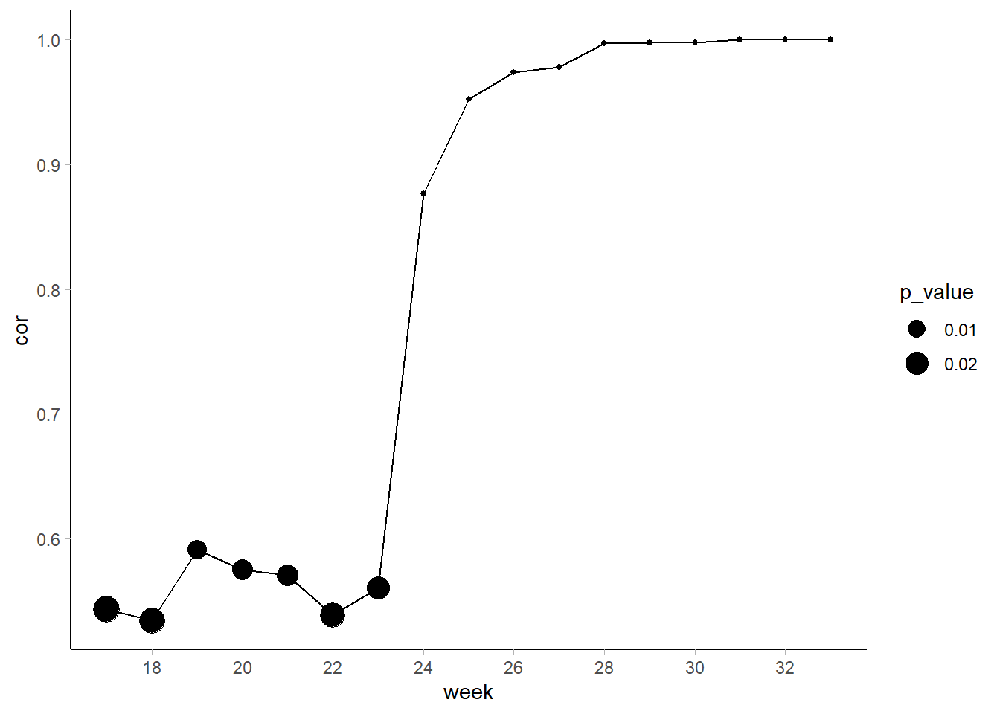
Max distance
box1 = data.frame()
seasons = as.numeric(unique(sbr_rep$season))
for(i in 1:length(seasons)){
sbr_dist1 = sbr_rep %>%
mutate(season = as.numeric(season)) %>%
filter(season == seasons[i])
weeks1 = unique(sbr_dist1$week)
for(j in 1:length(weeks1)){
sbr_dist2 = sbr_dist1%>%
filter(week <= weeks1[j]) %>%
dplyr::select(lon_utm, lat_utm) %>%
mutate(ID = 1:length(lon_utm),
ZZZ = 1)
dist_df = sbr_dist2 %>%
full_join(sbr_dist2,c("ZZZ"="ZZZ")) %>%
filter(ID.x != ID.y) %>%
mutate(dist=sqrt((lon_utm.x-lon_utm.y)^2 + (lat_utm.x-lat_utm.y)^2)) %>%
arrange(dist)
d = max(dist_df$dist, na.rm = T)/1000
lil_box = data.frame(season = seasons[i], week = weeks1[j], dist = d)
box1 = box1 %>%
bind_rows(lil_box)
}
}## Warning in max(dist_df$dist, na.rm = T): nenhum argumento não faltante para max;
## retornando -Inf
## Warning in max(dist_df$dist, na.rm = T): nenhum argumento não faltante para max;
## retornando -Inf
## Warning in max(dist_df$dist, na.rm = T): nenhum argumento não faltante para max;
## retornando -Inf
## Warning in max(dist_df$dist, na.rm = T): nenhum argumento não faltante para max;
## retornando -Inf
## Warning in max(dist_df$dist, na.rm = T): nenhum argumento não faltante para max;
## retornando -Inf
## Warning in max(dist_df$dist, na.rm = T): nenhum argumento não faltante para max;
## retornando -Inf
## Warning in max(dist_df$dist, na.rm = T): nenhum argumento não faltante para max;
## retornando -Inf
## Warning in max(dist_df$dist, na.rm = T): nenhum argumento não faltante para max;
## retornando -Inf
## Warning in max(dist_df$dist, na.rm = T): nenhum argumento não faltante para max;
## retornando -Inf
## Warning in max(dist_df$dist, na.rm = T): nenhum argumento não faltante para max;
## retornando -Infbox1_dist = box1 %>%
mutate(season = as.character(season)) %>%
full_join(ensodata2)%>%
filter(!is.infinite(dist))## Joining, by = "season"gam dist
lm_dist = mgcv::gamm(dist ~ enso+s(week, by= enso),
random = list(season=~1),
family =Gamma(link = "log"),
data = box1_dist)##
## Maximum number of PQL iterations: 20## iteration 1## iteration 2## iteration 3## iteration 4summary(lm_dist$gam)##
## Family: Gamma
## Link function: log
##
## Formula:
## dist ~ enso + s(week, by = enso)
##
## Parametric coefficients:
## Estimate Std. Error t value Pr(>|t|)
## (Intercept) 6.56377 0.03109 211.099 < 2e-16 ***
## ensoEl Niño 0.21212 0.05779 3.670 0.000297 ***
## ensoLa Niña -0.14835 0.05741 -2.584 0.010343 *
## ---
## Signif. codes: 0 '***' 0.001 '**' 0.01 '*' 0.05 '.' 0.1 ' ' 1
##
## Approximate significance of smooth terms:
## edf Ref.df F p-value
## s(week):ensoNeutral 5.588 5.588 85.44 <2e-16 ***
## s(week):ensoEl Niño 4.078 4.078 49.21 <2e-16 ***
## s(week):ensoLa Niña 3.536 3.536 83.73 <2e-16 ***
## ---
## Signif. codes: 0 '***' 0.001 '**' 0.01 '*' 0.05 '.' 0.1 ' ' 1
##
## R-sq.(adj) = 0.743
## Scale est. = 0.035552 n = 264# plot(lm_area$gam)dist_plot =plot_smooths(
model = lm_dist$gam,
series = week,
comparison = enso,
transform = exp
)+
guides(fill = F, linetype =F)+
scale_color_colorblind()+
scale_fill_manual(values = c("gray50","gray50","gray50"))+
scale_linetype_manual(values = c(1,1,1))+
theme_half_open()+
geom_line(data = box1_dist,
aes(week,dist, group = season, color = enso),
alpha = 0.2)+
geom_line(size =1, aes(color = enso))+
labs(x = "Week",
y = "Distance (km)",
color = "",
title = "Epidemic front")+
scale_x_continuous(limits = c(8,30), breaks = seq(5,30,by =5))+
coord_cartesian(ylim = c(0,1300))+
theme(legend.position = "none")
dist_plot## Warning: Removed 21 row(s) containing missing values (geom_path).## Warning: Removed 4 row(s) containing missing values (geom_path).## Warning: Removed 21 row(s) containing missing values (geom_path).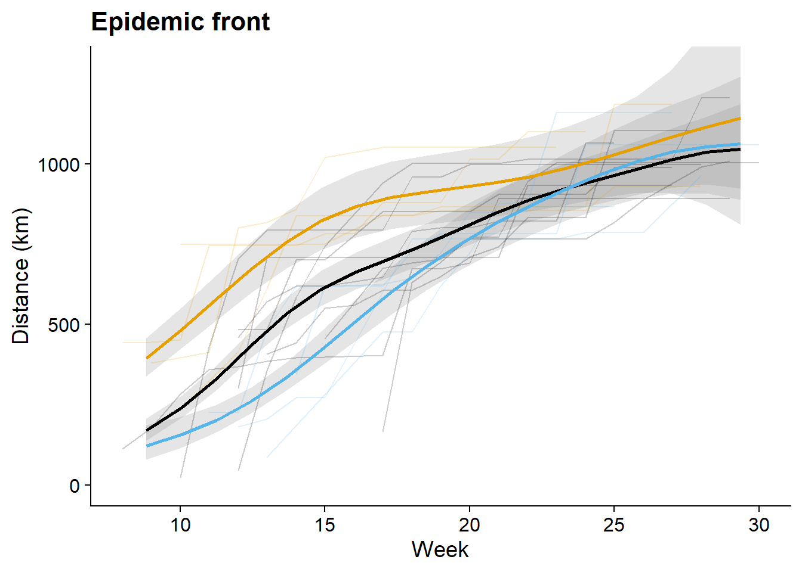
Combo
nnd+dist_plot+area+density+
plot_layout(nrow = 2)+
plot_annotation(tag_levels = "A")&
theme(plot.title = element_text(size = 11))## Warning: Removed 21 row(s) containing missing values (geom_path).## Warning: Removed 53 row(s) containing missing values (geom_path).## Warning: Removed 21 row(s) containing missing values (geom_path).
## Warning: Removed 21 row(s) containing missing values (geom_path).## Warning: Removed 4 row(s) containing missing values (geom_path).## Warning: Removed 21 row(s) containing missing values (geom_path).## Warning: Removed 9 row(s) containing missing values (geom_path).## Warning: Removed 51 row(s) containing missing values (geom_path).## Warning: Removed 9 row(s) containing missing values (geom_path).
## Warning: Removed 9 row(s) containing missing values (geom_path).## Warning: Removed 51 row(s) containing missing values (geom_path).## Warning: Removed 9 row(s) containing missing values (geom_path).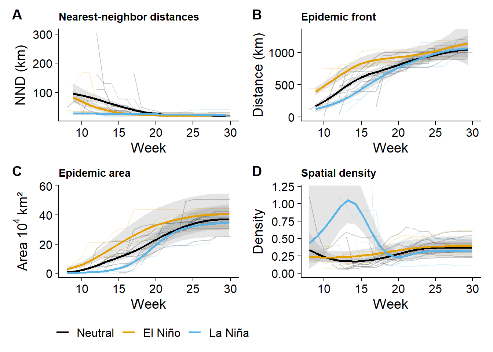
ggsave("figs/nnd_area.png", dpi = 600, height =8, width =10)## Warning: Removed 21 row(s) containing missing values (geom_path).## Warning: Removed 53 row(s) containing missing values (geom_path).## Warning: Removed 21 row(s) containing missing values (geom_path).
## Warning: Removed 21 row(s) containing missing values (geom_path).## Warning: Removed 4 row(s) containing missing values (geom_path).## Warning: Removed 21 row(s) containing missing values (geom_path).## Warning: Removed 9 row(s) containing missing values (geom_path).## Warning: Removed 51 row(s) containing missing values (geom_path).## Warning: Removed 9 row(s) containing missing values (geom_path).
## Warning: Removed 9 row(s) containing missing values (geom_path).## Warning: Removed 51 row(s) containing missing values (geom_path).## Warning: Removed 9 row(s) containing missing values (geom_path).Table
last_nnd %>%
full_join(areas_stats[,1:2] %>%
mutate(max_area = max_area/10000)) %>%
full_join(area_rate %>% mutate(rate_area = rate_area/10000)) %>%
full_join(week_count %>%
group_by(season) %>%
filter(week == max(week)) %>%
dplyr::select(season, density) %>% mutate(density = density*10000)) %>%
full_join(box1_dist %>%
group_by(season) %>%
filter(week == max(week))%>%
dplyr::select(season, dist)) %>%
full_join(ensodata2[13:14]) %>%
arrange(dist) %>%
ungroup() %>%
# group_by(enso) %>%
summarise(mean(dist))## Joining, by = "season"
## Joining, by = "season"
## Joining, by = "season"
## Joining, by = "season"
## Joining, by = "season"Principal components analysis
libraries
gathering the variables
pca_data = epi_time %>%
full_join(max_prevalance) %>%
full_join(r) %>%
full_join(audpc) %>%
full_join(time_10) %>%
full_join(min_sep15) %>%
# full_join(time_to_outbreak) %>%
# full_join(last_nnd) %>%
full_join(first_nnd) %>%
full_join(areas_stats) %>%
full_join(prev_all) %>%
dplyr::select(-region)## Joining, by = "season"
## Joining, by = "season"
## Joining, by = "season"
## Joining, by = "season"
## Joining, by = "season"
## Joining, by = "season"
## Joining, by = "season"
## Joining, by = "season"pca_datacorrelogram
ggpairs(pca_data[,-1], progress = FALSE)+
theme_bw()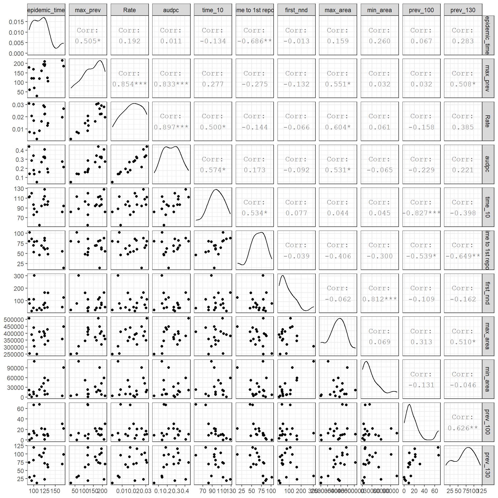
PCA
pca1 = prcomp(pca_data[,-1] , center = TRUE, scale. = TRUE)
summary(pca1)## Importance of components:
## PC1 PC2 PC3 PC4 PC5 PC6 PC7
## Standard deviation 1.9438 1.7566 1.4057 1.02650 0.66823 0.54693 0.39170
## Proportion of Variance 0.3435 0.2805 0.1796 0.09579 0.04059 0.02719 0.01395
## Cumulative Proportion 0.3435 0.6240 0.8036 0.89944 0.94003 0.96722 0.98117
## PC8 PC9 PC10 PC11
## Standard deviation 0.34583 0.25972 0.13857 0.02909
## Proportion of Variance 0.01087 0.00613 0.00175 0.00008
## Cumulative Proportion 0.99205 0.99818 0.99992 1.00000fm_pca1 = PCA(pca_data[,-1],graph = FALSE)
fviz_screeplot(fm_pca1)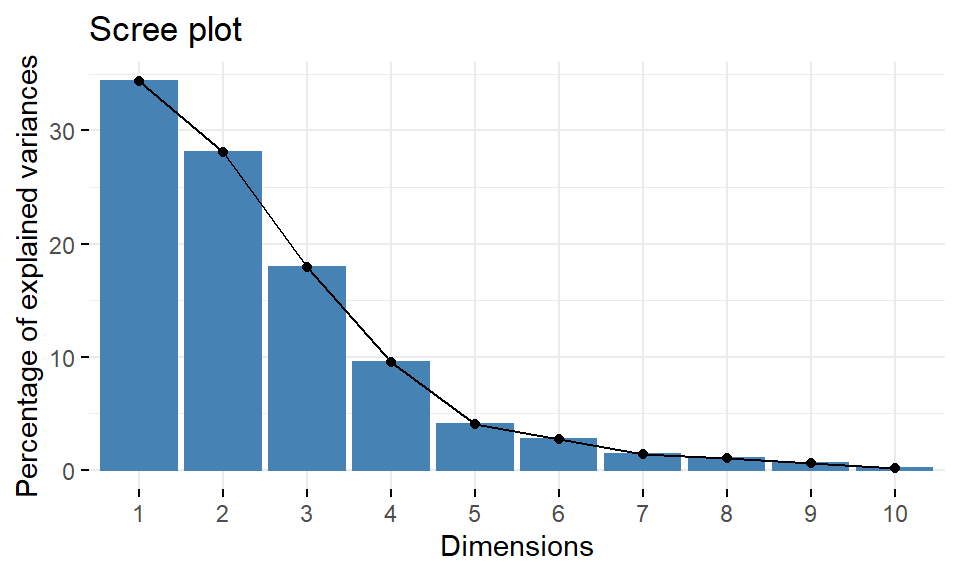
plot_grid(fviz_contrib(fm_pca1, choice = "var", axes = 1),
fviz_contrib(fm_pca1, choice = "var", axes = 2))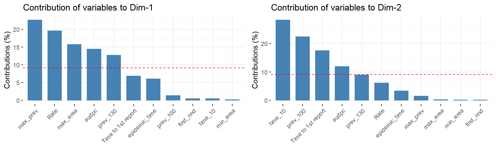
fviz_contrib(fm_pca1, choice = "var", axes = 1:2)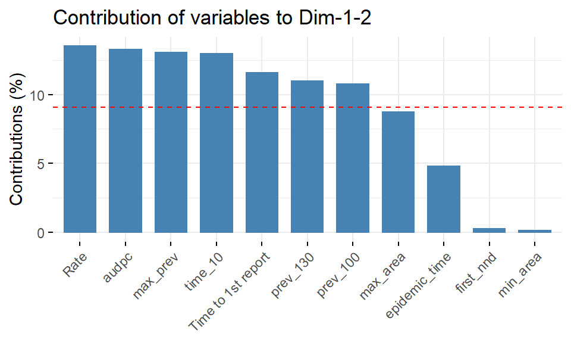
biplot
fviz_pca_biplot(fm_pca1,
col.var="contrib",
repel = TRUE,
col.ind = NA)+
geom_text(aes(label = pca_data$season),
fontface = "bold",
size = 4,
color = "black",
alpha= 1)+
scale_color_viridis(option = "B", direction = -1, end = 0.8, begin = 0.2)+
coord_equal()+
labs(title ="")## Warning: Removed 17 rows containing missing values (geom_point).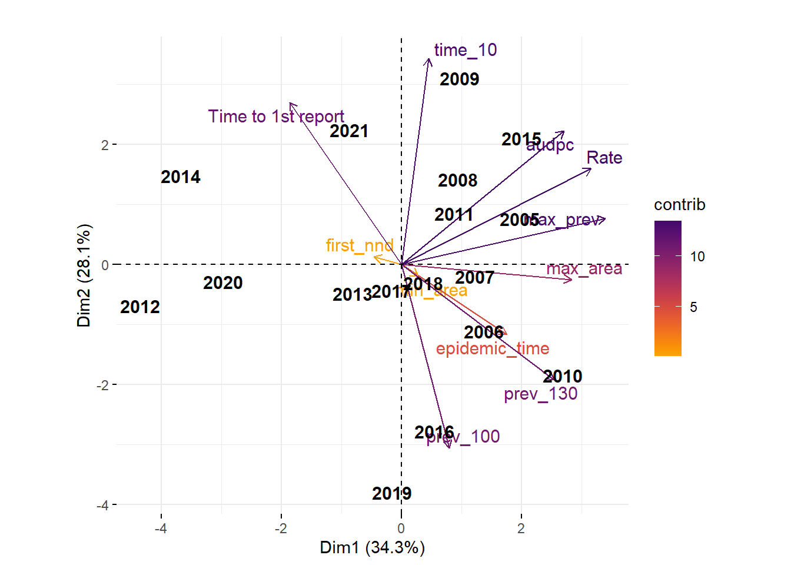
# ggsave("figs/pca.png", dpi = 600, height = 6, width = 8)pca_data2 = pca_data %>% full_join(ensodata2[,13:14])## Joining, by = "season"fviz_pca_ind(fm_pca1,
# col.var="contrib",
habillage = pca_data2$enso,
repel = TRUE,
label = "none",
addEllipses = T,
pointshape = 75,
col.ind = NA,
ellipse.level=0.8)+
geom_text(aes(label = pca_data2$season, color =pca_data2$enso),
# fontface = "bold",
size = 4,
show.legend = F,
# color = "black",
alpha= 1)+
scale_fill_colorblind()+
scale_color_colorblind()+
# scale_fill_manual(values = c(NA,NA, NA))+
coord_equal()+
labs(title ="")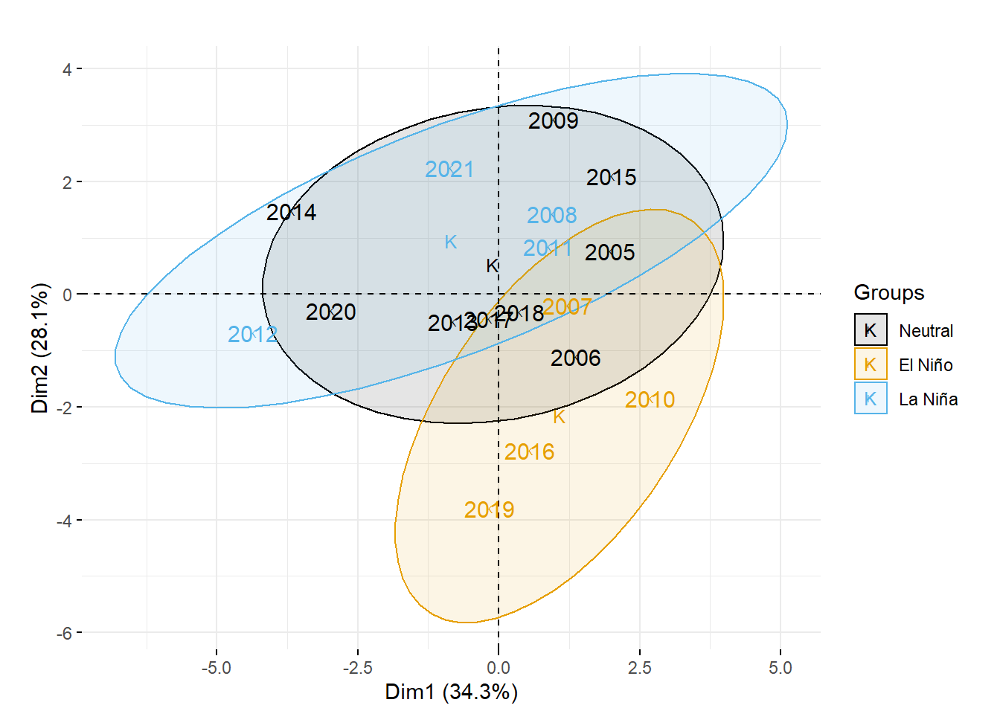
clustering
library("ape")## Registered S3 method overwritten by 'ape':
## method from
## plot.mst spdep##
## Attaching package: 'ape'## The following objects are masked from 'package:spatstat':
##
## edges, rotate## The following objects are masked from 'package:raster':
##
## rotate, zoom## The following object is masked from 'package:splancs':
##
## zoom## The following object is masked from 'package:ggpubr':
##
## rotate## The following object is masked from 'package:agricolae':
##
## consensuslibrary("ggdendro")##
## Attaching package: 'ggdendro'## The following object is masked from 'package:maptools':
##
## labelcluss_data = as.matrix(data.frame(scale(pca_data[-1])))
row.names(cluss_data) = as.matrix((pca_data2$enso))
NHCA = kmeans(cluss_data,3)
NHCA## K-means clustering with 3 clusters of sizes 7, 3, 7
##
## Cluster means:
## epidemic_time max_prev Rate audpc time_10 Time.to.1st.report
## 1 -0.01255154 -0.4555083 -0.7356508 -0.6352865 -0.6721739 -0.01102127
## 2 0.68447746 -0.4222628 -0.2839164 -0.7410278 -0.1473450 -0.96864754
## 3 -0.28079594 0.6364781 0.8573293 0.9528698 0.7353217 0.42615593
## first_nnd max_area min_area prev_100 prev_130
## 1 -0.4749762 -0.2310193 -0.5410291 0.5364692 0.02363166
## 2 1.5161455 -0.1245457 1.7155251 -0.2336622 -0.13927250
## 3 -0.1748004 0.2843961 -0.1941959 -0.4363283 0.03605655
##
## Clustering vector:
## Neutral Neutral La Niña La Niña El Niño Neutral La Niña El Niño Neutral Neutral
## 3 1 3 3 1 2 1 1 1 3
## La Niña Neutral El Niño Neutral Neutral Neutral El Niño
## 3 3 3 1 2 1 2
##
## Within cluster sum of squares by cluster:
## [1] 60.40472 24.05277 29.25799
## (between_SS / total_SS = 35.4 %)
##
## Available components:
##
## [1] "cluster" "centers" "totss" "withinss" "tot.withinss"
## [6] "betweenss" "size" "iter" "ifault"dd = dist(scale(cluss_data), method = "euclidean")
hc <- hclust(dd, method = "average")
mypal = c("red", "green", "blue")
clus5 = cutree(hc, 3)
dend_field1 <-plot(as.phylo(hc), type = "unrooted",
cex = 0.6,
no.margin = TRUE)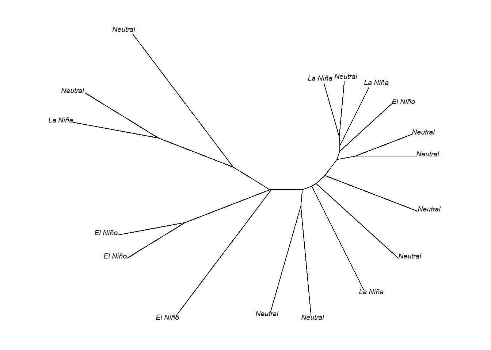
dend <- as.dendrogram(hc)
dend_data <- dendro_data(dend, type = "rectangle")
row.names(cluss_data) = as.matrix(
unite_(pca_data2, "season_state", c("season","enso"), sep = ": ")$season_state
)
dd2 = dist(scale(cluss_data), method = "euclidean")
hc2 <- hclust(dd2, method = "ward.D2")
dend2 <- as.dendrogram(hc2)
dend_data2 <- dendro_data(dend2, type = "rectangle")ggplot(dend_data2$segments) +
# geom_rect(aes(xmin=0, xmax=4.5, ymin=4, ymax=-2), fill="gray", alpha=0.01, size = 1)+
geom_segment(aes(x = x, y = y, xend = xend, yend = yend))+
geom_text(data = dend_data2$labels %>%
separate(label, into=c("season", "enso"),sep = ":", remove = F),
aes(x, y = -2 ,
label = label,
color = enso,
),
hjust = 1, angle = 0, size = 3, fontface = "bold")+
coord_flip()+
scale_y_reverse()+
scale_color_colorblind()+
labs(x = "", y="", color ="")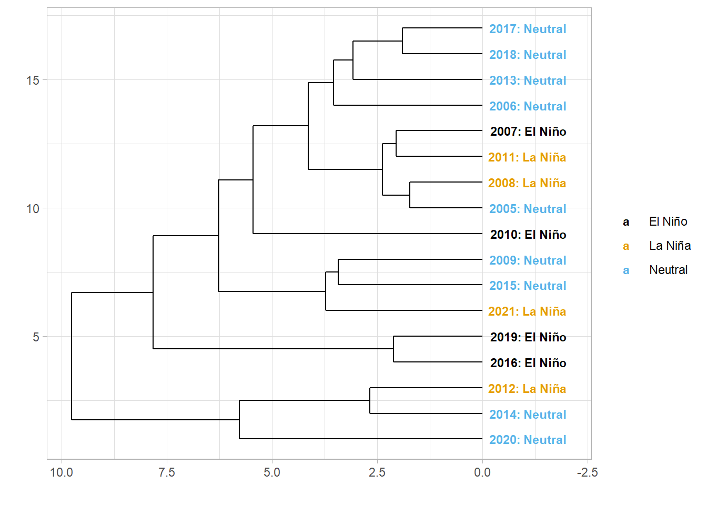
Survival analysis
Frequentist
kaplan-meier non-parametric survival
Data
sbr_rep_count = sbr_rep %>%
mutate(count = 1) %>%
mutate(season = as.character(season))null model
KM0 = survfit(Surv(days, count) ~ 1, conf.type="log", type="kaplan-meier", data=sbr_rep_count)
KM0## Call: survfit(formula = Surv(days, count) ~ 1, data = sbr_rep_count,
## conf.type = "log", type = "kaplan-meier")
##
## n events median 0.95LCL 0.95UCL
## 2441 2441 91 90 93overal_t = as.matrix(summary(KM0)$table)["median",1]surv_curve_geral = data.frame(time = KM0$time, surv = KM0$surv, lower = KM0$lower , upper = KM0$upper)
surv_curve_geral%>%
ggplot(aes(time, surv))+
geom_step(size =1)+
RcmdrPlugin.KMggplot2::geom_stepribbon(aes(ymin = lower, ymax = upper),
alpha = 0.1, color = NA)+
theme_half_open()## Registered S3 methods overwritten by 'lme4':
## method from
## cooks.distance.influence.merMod car
## influence.merMod car
## dfbeta.influence.merMod car
## dfbetas.influence.merMod car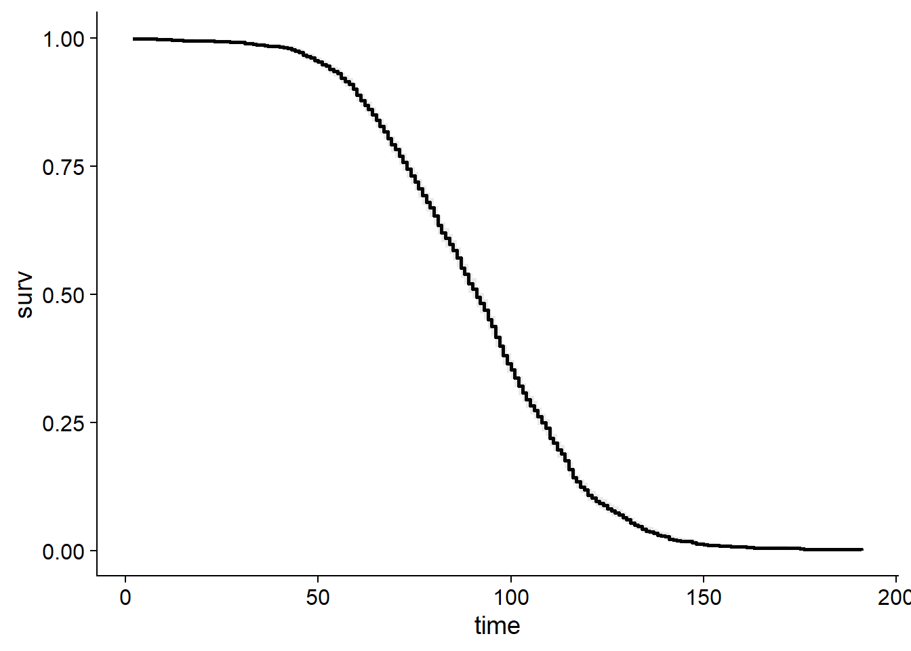
Season covariate
KM0_s = survfit(Surv(days, count) ~ season, conf.type="log", type="kaplan-meier", data=sbr_rep_count)
KM0_s## Call: survfit(formula = Surv(days, count) ~ season, data = sbr_rep_count,
## conf.type = "log", type = "kaplan-meier")
##
## n events median 0.95LCL 0.95UCL
## season=2005 195 195 89.0 86 94
## season=2006 215 215 94.0 89 101
## season=2007 195 195 87.0 80 90
## season=2008 188 188 100.0 98 107
## season=2009 209 209 112.0 108 118
## season=2010 185 185 80.0 76 83
## season=2011 168 168 87.5 82 91
## season=2012 27 27 88.0 78 102
## season=2013 105 105 82.0 78 89
## season=2014 60 60 81.0 77 93
## season=2015 178 178 102.0 98 103
## season=2016 121 121 61.0 59 67
## season=2017 124 124 88.0 83 94
## season=2018 161 161 96.0 94 98
## season=2019 119 119 70.0 67 78
## season=2020 70 70 101.0 92 108
## season=2021 121 121 97.0 96 104outbreak = as.data.frame(summary(KM0_s)$table[, c("*rmean","0.95LCL","0.95UCL","*se(rmean)")])
outbreak =rownames_to_column(outbreak, var = "season")
out_day = outbreak %>%
separate(season, sep ="=", remove = T, into = c("trash", "season")) %>%
full_join(ensodata2) %>%
mutate(season = as.numeric(season)) %>%
# arrange(`*rmean`)
ggplot(aes(season, `*rmean`, color = enso)) +
geom_hline(yintercept = overal_t, color= "gray", linetype = 2)+
geom_line(color = "gray",size =0.3)+
geom_errorbar(aes(ymin = 0 , ymax = `*rmean`+`*se(rmean)`),
size =0.3, width =0, color = "gray70")+
geom_errorbar(aes(ymin = `*rmean`-`*se(rmean)` , ymax = `*rmean`+`*se(rmean)`),
size =0.7, width =0 #color = "black"
)+
geom_point(size = 2)+
scale_x_continuous(breaks = 2005:2021) +
scale_color_colorblind() +
labs(x = "Crop season",
y = "Time to disease outbreak",
color = "")+
theme_half_open()+
theme(axis.text.x = element_text(angle=45, hjust =1)) ## Joining, by = "season"out_day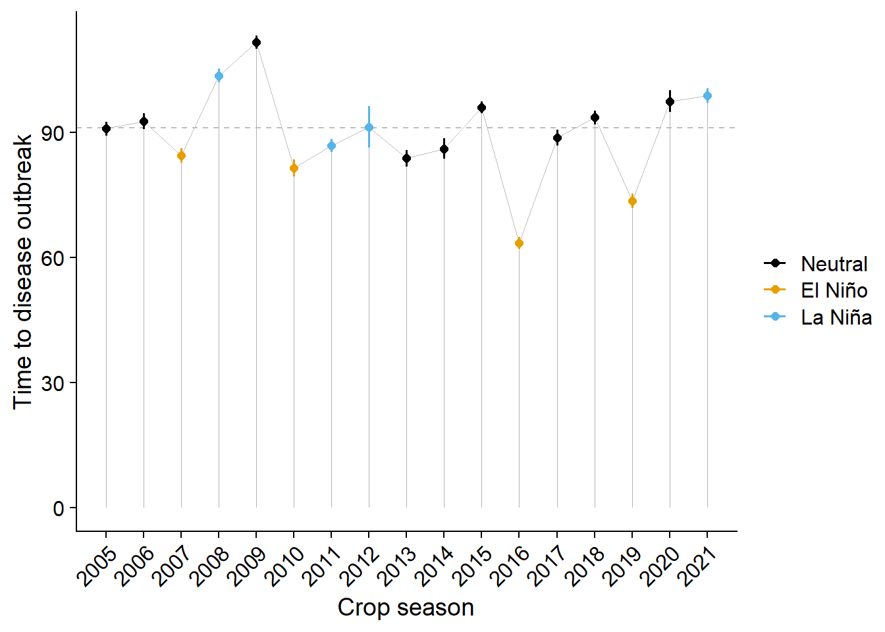
ss = summary(KM0_s)
surv_curves = data.frame(time = KM0_s$time, surv = KM0_s$surv, lower = KM0_s$lower , upper = KM0_s$upper, strata =ss$strata) %>%
separate(strata, into = c("s", "season"), sep ="=") %>%
full_join(ensodata2) %>%
ggplot()+
geom_step(aes(time, surv, group = season, color = enso),
size =.5,
# color = "gray",
alpha = 0.4)+
RcmdrPlugin.KMggplot2::geom_stepribbon(aes(time, ymin = lower, ymax = upper, group = season),
alpha = 0.05, color = NA)+
geom_step(data = surv_curve_geral,
aes(time, surv),
color = "red",
size = 0.8)+
geom_segment(x = 91, y = 0, xend = 91, yend = 0.5, linetype = 2, size =0.7)+
geom_segment(x = 0, y = 0.5, xend = 91, yend = 0.5, linetype = 2, size =0.7)+
scale_color_colorblind()+
guides(color = guide_legend(override.aes = list(alpha=1, size =1)))+
theme_half_open()+
labs(color = "",
y = "Survival probability",
x = "Days")## Joining, by = "season"surv_curves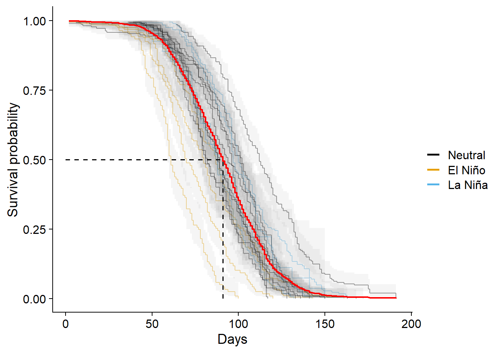
surv_curves+out_day+
# plot_layout(guides = "collect")+
plot_annotation(tag_levels = "A")&
theme(legend.position = "top")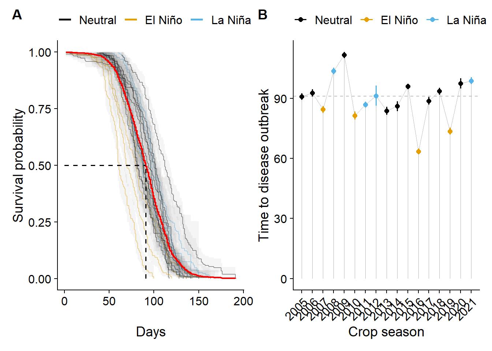
ggsave("figs/hsurvival.png", dpi = 600, height = 4.5, width = 10)time_to_outbreak =outbreak %>%
# separate(season, sep =",", remove = T, into = c("season", "state")) %>%
separate(season, sep ="=", remove = T, into = c("trash", "season")) %>%
# separate(state, sep ="=", remove = T, into = c("trash", "state")) %>%
mutate(`time_outbreak` = `*rmean`) %>%
dplyr::select(-trash, -`0.95LCL`, -`0.95UCL`, - `*se(rmean)`, -`*rmean`)outbreak %>%
# separate(season, sep =",", remove = T, into = c("season", "state")) %>%
separate(season, sep ="=", remove = T, into = c("trash", "season")) %>%
# separate(state, sep ="=", remove = T, into = c("trash", "state")) %>%
# group_by(state) %>%
summarise(mean_T = mean(`*rmean`),
mean_se = mean(`*se(rmean)`),
min_T = min(`*rmean`),
max_T = max (`*rmean`))Cox Proportional Hazards Model
cox = coxph(Surv(days, count) ~ season, data = sbr_rep_count )
summary(cox)## Call:
## coxph(formula = Surv(days, count) ~ season, data = sbr_rep_count)
##
## n= 2441, number of events= 2441
##
## coef exp(coef) se(coef) z Pr(>|z|)
## season2006 -0.12141 0.88567 0.09897 -1.227 0.219899
## season2007 0.31294 1.36744 0.10168 3.078 0.002086 **
## season2008 -0.50781 0.60181 0.10274 -4.943 7.70e-07 ***
## season2009 -0.90166 0.40590 0.10254 -8.793 < 2e-16 ***
## season2010 0.23304 1.26243 0.10270 2.269 0.023266 *
## season2011 0.29799 1.34715 0.10569 2.819 0.004811 **
## season2012 -0.14659 0.86365 0.20553 -0.713 0.475690
## season2013 0.40698 1.50227 0.12140 3.352 0.000801 ***
## season2014 0.34412 1.41075 0.14798 2.325 0.020046 *
## season2015 -0.03134 0.96915 0.10446 -0.300 0.764186
## season2016 1.64509 5.18146 0.11888 13.839 < 2e-16 ***
## season2017 0.17354 1.18951 0.11509 1.508 0.131596
## season2018 -0.01747 0.98268 0.10662 -0.164 0.869831
## season2019 0.94645 2.57656 0.11745 8.058 7.73e-16 ***
## season2020 -0.18856 0.82815 0.13954 -1.351 0.176621
## season2021 -0.20543 0.81430 0.11584 -1.773 0.076174 .
## ---
## Signif. codes: 0 '***' 0.001 '**' 0.01 '*' 0.05 '.' 0.1 ' ' 1
##
## exp(coef) exp(-coef) lower .95 upper .95
## season2006 0.8857 1.1291 0.7295 1.0753
## season2007 1.3674 0.7313 1.1204 1.6690
## season2008 0.6018 1.6616 0.4921 0.7361
## season2009 0.4059 2.4637 0.3320 0.4962
## season2010 1.2624 0.7921 1.0323 1.5439
## season2011 1.3472 0.7423 1.0951 1.6572
## season2012 0.8636 1.1579 0.5773 1.2921
## season2013 1.5023 0.6657 1.1842 1.9058
## season2014 1.4108 0.7088 1.0556 1.8854
## season2015 0.9691 1.0318 0.7897 1.1893
## season2016 5.1815 0.1930 4.1045 6.5409
## season2017 1.1895 0.8407 0.9493 1.4905
## season2018 0.9827 1.0176 0.7974 1.2111
## season2019 2.5766 0.3881 2.0468 3.2435
## season2020 0.8282 1.2075 0.6300 1.0887
## season2021 0.8143 1.2280 0.6489 1.0219
##
## Concordance= 0.644 (se = 0.006 )
## Likelihood ratio test= 557.7 on 16 df, p=<2e-16
## Wald test = 609.4 on 16 df, p=<2e-16
## Score (logrank) test = 709.5 on 16 df, p=<2e-16HR = as.data.frame(summary(cox)$conf.int[1:16, c("exp(coef)","lower .95","upper .95")])
HR = rownames_to_column(HR, var = "season")
hr_risk = HR %>%
separate(season, sep ="season", remove = T, into = c("trash", "season")) %>%
filter(!is.na(season)) %>%
ggplot(aes(season, log(`exp(coef)`))) +
geom_hline(yintercept = 0, size = 1, color = "gray40",linetype =2, label = "2005")+
geom_point(size = 2, position = position_dodge(width = .5),
color = "steelblue")+
geom_errorbar(aes(ymin = log(`lower .95`), ymax = log(`upper .95`)),
position = position_dodge(width = .5), size =1, width =0,
color = "steelblue")+
geom_text(aes(12,0,label = "2005", vjust = -0.5,angle = 90), size =3.5,color = "gray40")+
coord_flip()+
labs(x = "Crop season", y = "Hazard risk", color = "State")## Warning: Ignoring unknown parameters: label# ggsave("figs/hazard_risk.png", dpi = 600, height = 6, width = 4)out_day+hr_risk+
plot_annotation(tag_levels = "A")&
theme_half_open()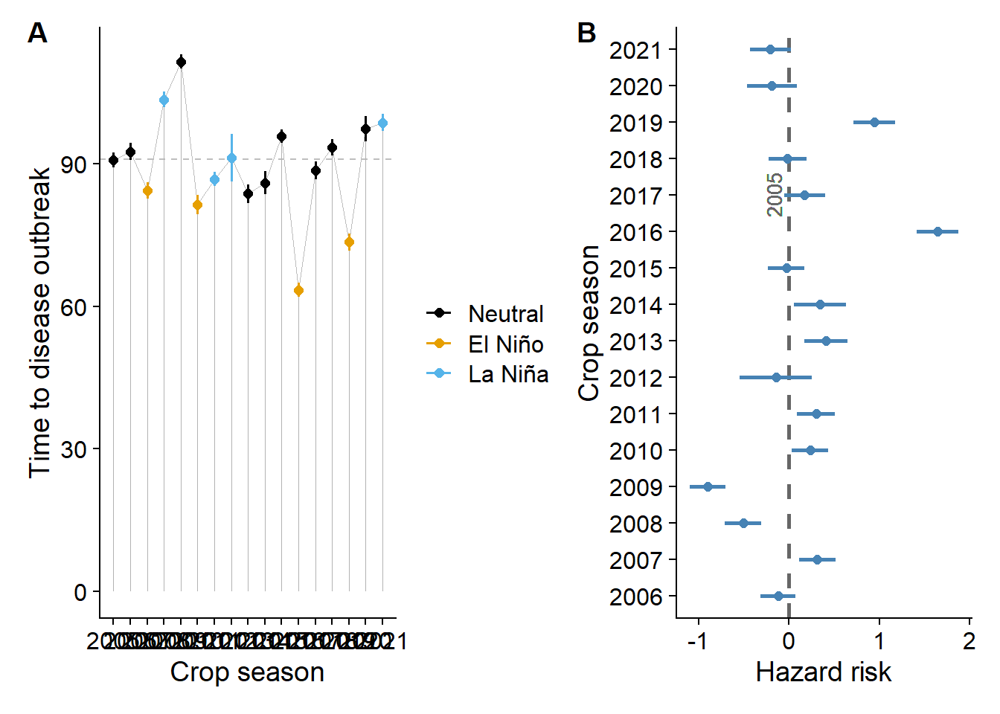
Bayesian
Loading shapefiles
shape_sul= readOGR("shapefiles/BR_MUN1997_S_region","BR_MUN1997_S_region" )## Warning in OGRSpatialRef(dsn, layer, morphFromESRI = morphFromESRI, dumpSRS =
## dumpSRS, : Discarded ellps South_American_1969 in CRS definition: +proj=longlat
## +a=6378160 +rf=298.249997276159 +no_defs## Warning in OGRSpatialRef(dsn, layer, morphFromESRI = morphFromESRI, dumpSRS =
## dumpSRS, : Discarded datum D_SA1969 in CRS definition: +proj=longlat +a=6378160
## +rf=298.249997276159 +no_defs## Warning in showSRID(wkt2, "PROJ"): Discarded ellps South_American_1969 in CRS
## definition: +proj=longlat +a=6378160 +rf=298.249997276159 +no_defs## Warning in showSRID(wkt2, "PROJ"): Discarded datum D_SA1969 in CRS definition## OGR data source with driver: ESRI Shapefile
## Source: "G:\Meu Drive\Kaique-Alves\SBR-soybean\02 - SBR_spatiotemporal-description\Data_analysis\shapefiles\BR_MUN1997_S_region", layer: "BR_MUN1997_S_region"
## with 1159 features
## It has 19 fieldsshape_sul@data$id = rownames(shape_sul@data)
sul_points = fortify(shape_sul)## Regions defined for each Polygonssul_df =plyr::join(sul_points, shape_sul@data, by="id")IDs = unique(sul_df$id)
location2 = numeric(length(sbr_rep_count$lat))
for(i in 1:length(IDs)){
qqq = sul_df %>%
filter(id == IDs[i])
city = as.character(unique(qqq$MUNIC_PIO))
for(j in 1:length(sbr_rep_count$lat)){
pip = point.in.polygon(point.x = sbr_rep_count$lon[j],
point.y = sbr_rep_count$lat[j],
pol.x = qqq$long,
pol.y = qqq$lat)
if(pip > 0){location2[j] = city}
}
}
sbr_rep_count_new = sbr_rep_count %>%
mutate(MUNIC_PIO = location2)Data
months = c("Sep", "Oct", "Nov", "Dec", "Jan", "Feb", "Mar","Apr","May")
inla_data_geral = sbr_rep_count %>%
mutate(month = factor(month, levels = months)) %>%
full_join(sbr_rep_count_new %>% mutate(month = factor(month, levels = months))) %>%
full_join(data.frame(MUNIC_PIO = unique(sbr_rep_count_new$MUNIC_PIO)) %>%
mutate(S = 1:length(MUNIC_PIO)))## Joining, by = c("start_date", "season", "state", "location", "date_report", "Phen_state", "month", "days", "lat", "lon", "Phen_state_int", "start_season", "days_sep15", "week", "region", "lat_utm", "lon_utm", "count")## Joining, by = "MUNIC_PIO"Model iid unestructured
form_surv_pr = inla.surv(days, count) ~ 1 + season +
f(S, model = "iid")
surv_fit_pr.inla = inla(form_surv_pr,
data = inla_data_geral,
family = "coxph",
control.hazard = list(hyper = list(prec = list(param = c(0.001, 0.001)))),
control.compute=list(dic=TRUE,
cpo=TRUE,
waic=TRUE,
openmp.strategy="huge"))
# summary(surv_fit_pr.inla)
# surv_fit_pr.inla <- inla.rerun(surv_fit_pr.inla)
saveRDS(surv_fit_pr.inla, "./models/model_seasons_idd.RDS")surv_fit_pr.inla = readRDS("./models/model_seasons_idd.RDS")
summary(surv_fit_pr.inla)##
## Call:
## c("inla(formula = cph$formula, family = cph$family, contrasts =
## contrasts, ", " data = c(as.list(cph$data), cph$data.list), quantiles =
## quantiles, ", " E = cph$E, offset = offset, scale = scale, weights =
## weights, ", " Ntrials = NULL, strata = NULL, verbose = verbose, lincomb
## = lincomb, ", " control.compute = control.compute, control.predictor =
## control.predictor, ", " control.family = control.family, control.inla =
## control.inla, ", " control.results = control.results, control.fixed =
## control.fixed, ", " control.mode = control.mode, control.expert =
## control.expert, ", " control.hazard = control.hazard, control.lincomb =
## control.lincomb, ", " control.update = control.update, only.hyperparam
## = only.hyperparam, ", " inla.call = inla.call, inla.arg = inla.arg,
## num.threads = num.threads, ", " blas.num.threads = blas.num.threads,
## keep = keep, working.directory = working.directory, ", " silent =
## silent, debug = debug)")
## Time used:
## Pre = 0.615, Running = 445, Post = 1.11, Total = 447
## Fixed effects:
## mean sd 0.025quant 0.5quant 0.975quant mode kld
## (Intercept) -3.912 0.115 -4.143 -3.911 -3.689 -3.908 0
## season2006 -0.129 0.104 -0.333 -0.129 0.076 -0.129 0
## season2007 0.268 0.107 0.058 0.268 0.478 0.268 0
## season2008 -0.562 0.108 -0.775 -0.561 -0.350 -0.561 0
## season2009 -0.966 0.108 -1.179 -0.966 -0.754 -0.966 0
## season2010 0.311 0.110 0.094 0.310 0.527 0.310 0
## season2011 0.289 0.111 0.071 0.289 0.506 0.290 0
## season2012 -0.235 0.218 -0.679 -0.229 0.177 -0.218 0
## season2013 0.382 0.128 0.128 0.383 0.631 0.384 0
## season2014 0.285 0.156 -0.027 0.287 0.585 0.291 0
## season2015 -0.019 0.109 -0.234 -0.019 0.195 -0.019 0
## season2016 1.608 0.125 1.362 1.608 1.851 1.609 0
## season2017 0.168 0.120 -0.070 0.168 0.402 0.169 0
## season2018 -0.037 0.112 -0.258 -0.037 0.181 -0.037 0
## season2019 0.943 0.124 0.699 0.944 1.185 0.945 0
## season2020 -0.257 0.146 -0.548 -0.255 0.025 -0.252 0
## season2021 -0.222 0.121 -0.461 -0.221 0.014 -0.220 0
##
## Random effects:
## Name Model
## S IID model
## baseline.hazard RW1 model
##
## Model hyperparameters:
## mean sd 0.025quant 0.5quant 0.975quant mode
## Precision for S 12.48 3.33 7.52 11.93 20.46 10.89
## Precision for baseline.hazard 32.52 12.12 14.19 30.79 61.21 27.36
##
## Expected number of effective parameters(stdev): 160.94(24.48)
## Number of equivalent replicates : 115.96
##
## Deviance Information Criterion (DIC) ...............: 14731.50
## Deviance Information Criterion (DIC, saturated) ....: 9849.49
## Effective number of parameters .....................: 161.23
##
## Watanabe-Akaike information criterion (WAIC) ...: 14732.41
## Effective number of parameters .................: 158.53
##
## Marginal log-Likelihood: -7471.32
## CPO and PIT are computed
##
## Posterior marginals for the linear predictor and
## the fitted values are computedPlot effect
surv_fit_pr.inla$summary.fixed %>%
rownames_to_column("season") %>%
filter(season != "(Intercept)") %>%
separate(season, into = c("t", "season"), sep = "on") %>%
ggplot(aes(mean,season))+
geom_vline(xintercept = 0, linetype = 2, color = "gray")+
geom_point(size =2 )+
geom_errorbar(aes(xmin = `0.025quant`, xmax = `0.975quant`),
width = 0)+
theme(#legend.position = "none",
panel.background = element_blank(),
panel.grid = element_blank(),
panel.border = element_blank(),
axis.line.x = element_line(color = "black"),
axis.line.y = element_line(color = "black"),
axis.text.x = element_text(angle = 0)) 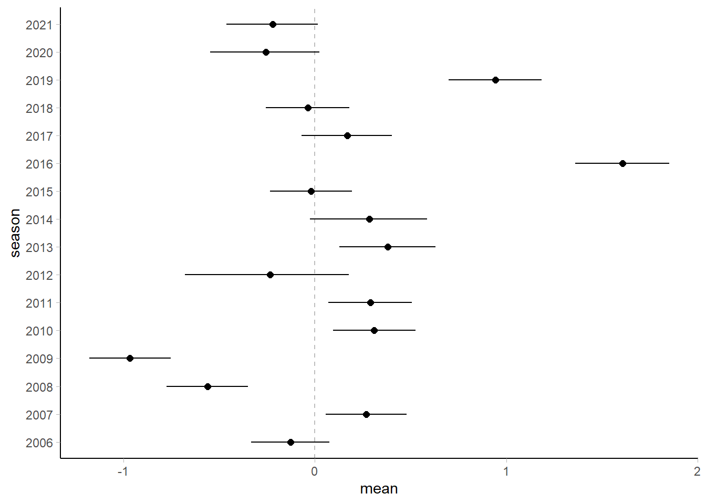
Neighbour by distance
sul_locations = unique(sbr_rep_count_new$MUNIC_PIO)
shape_sul_sub = subset(shape_sul, shape_sul$MUNIC_PIO%in%sul_locations )
coords_pr = coords <- coordinates(shape_sul_sub)
IDs_pr <- row.names(as(shape_sul_sub, "data.frame"))
long = coords_pr[,1]
lat = coords_pr[,2]
xy <- data.frame(ID = 1:(length(lat)), long, lat)
coordinates(xy) <- c("long", "lat")
proj4string(xy) <- CRS("+init=epsg:4326")
res <- spTransform(xy, CRS("+proj=utm +zone=22 +south ellps=WGS84"))## Warning in showSRID(uprojargs, format = "PROJ", multiline = "NO"): Discarded
## datum Unknown based on WGS84 ellipsoid in CRS definitioncoords_grid = as.data.frame(res)
coords2 = as.matrix(coords_grid[,2:3])
colnames(coords2) <- c("x1","x2")u <- 0.2/0.31
alpha <- 0.01
phi.u <- 0.5
phi.alpha <- 2/3200 km
dnear_dist_200 = dnearneigh(coords2, 0,200000, row.names=IDs_pr)
nb2INLA("./models/grid200.graph",dnear_dist_200)
W.pr_dist200 = inla.read.graph("./models/grid200.graph")
plot(shape_sul_sub)
plot(dnear_dist_200,coordinates(shape_sul_sub), add = T)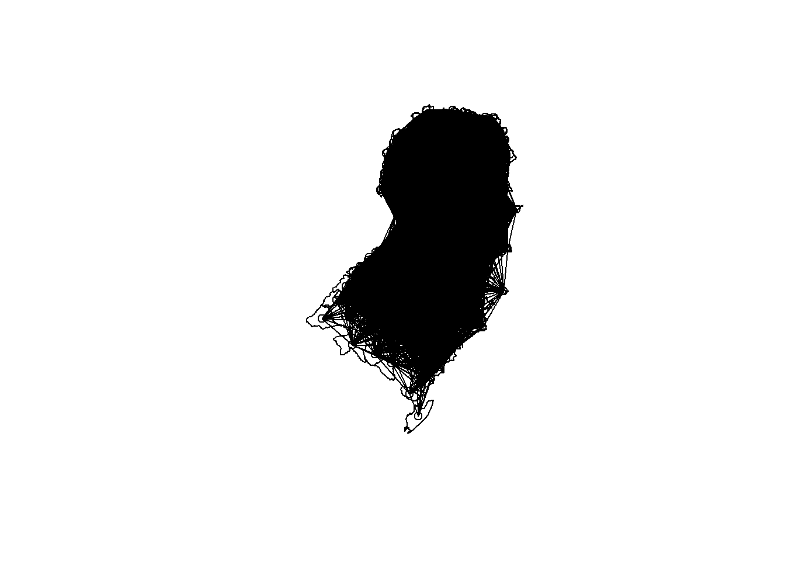
form_surv_spt.200 = inla.surv(days, count) ~ 1 + season +
f(S, model = "bym2", graph = W.pr_dist200,
hyper = list(prec = list(param = c(0.001, 0.001)),
phi = list(prior = "pc",
param = c(phi.u, phi.alpha),
initial = -3)))
surv_fit_200 = inla(form_surv_spt.200,
data = inla_data_geral,
family = "coxph",
control.hazard = list(hyper = list(prec = list(param = c(0.001, 0.001)))),
control.compute=list(dic=TRUE,
cpo=TRUE,
waic=TRUE,
openmp.strategy="huge"),
verbose=F)
saveRDS(surv_fit_200, "./models/model_seasons_200.RDS")surv_fit_200 = readRDS("./models/model_seasons_200.RDS")
summary(surv_fit_200)##
## Call:
## c("inla(formula = cph$formula, family = cph$family, contrasts =
## contrasts, ", " data = c(as.list(cph$data), cph$data.list), quantiles =
## quantiles, ", " E = cph$E, offset = offset, scale = scale, weights =
## weights, ", " Ntrials = NULL, strata = NULL, verbose = verbose, lincomb
## = lincomb, ", " control.compute = control.compute, control.predictor =
## control.predictor, ", " control.family = control.family, control.inla =
## control.inla, ", " control.results = control.results, control.fixed =
## control.fixed, ", " control.mode = control.mode, control.expert =
## control.expert, ", " control.hazard = control.hazard, control.lincomb =
## control.lincomb, ", " control.update = control.update, only.hyperparam
## = only.hyperparam, ", " inla.call = inla.call, inla.arg = inla.arg,
## num.threads = num.threads, ", " blas.num.threads = blas.num.threads,
## keep = keep, working.directory = working.directory, ", " silent =
## silent, debug = debug)")
## Time used:
## Pre = 30, Running = 168, Post = 0.805, Total = 199
## Fixed effects:
## mean sd 0.025quant 0.5quant 0.975quant mode kld
## (Intercept) -3.988 0.109 -4.206 -3.986 -3.779 -3.983 0
## season2006 -0.117 0.099 -0.311 -0.117 0.077 -0.117 0
## season2007 0.314 0.102 0.114 0.314 0.513 0.314 0
## season2008 -0.509 0.103 -0.711 -0.509 -0.308 -0.509 0
## season2009 -0.899 0.102 -1.100 -0.899 -0.698 -0.899 0
## season2010 0.230 0.103 0.028 0.230 0.431 0.230 0
## season2011 0.294 0.106 0.086 0.294 0.501 0.294 0
## season2012 -0.137 0.205 -0.557 -0.130 0.249 -0.118 0
## season2013 0.402 0.121 0.161 0.402 0.638 0.404 0
## season2014 0.336 0.148 0.039 0.338 0.620 0.343 0
## season2015 -0.018 0.104 -0.223 -0.018 0.187 -0.018 0
## season2016 1.603 0.119 1.368 1.603 1.834 1.605 0
## season2017 0.172 0.115 -0.055 0.173 0.397 0.174 0
## season2018 -0.019 0.107 -0.229 -0.019 0.189 -0.019 0
## season2019 0.929 0.117 0.696 0.929 1.158 0.931 0
## season2020 -0.185 0.140 -0.464 -0.183 0.084 -0.180 0
## season2021 -0.202 0.116 -0.431 -0.201 0.024 -0.200 0
##
## Random effects:
## Name Model
## S BYM2 model
## baseline.hazard RW1 model
##
## Model hyperparameters:
## mean sd 0.025quant 0.5quant 0.975quant
## Precision for S 2.01e+09 5.61e+10 4.02e+06 1.07e+08 1.13e+10
## Phi for S 2.82e-01 2.49e-01 9.00e-03 2.01e-01 8.68e-01
## Precision for baseline.hazard 3.43e+01 1.28e+01 1.49e+01 3.24e+01 6.46e+01
## mode
## Precision for S 7.41e+06
## Phi for S 1.60e-02
## Precision for baseline.hazard 2.88e+01
##
## Expected number of effective parameters(stdev): 29.10(0.435)
## Number of equivalent replicates : 641.25
##
## Deviance Information Criterion (DIC) ...............: 14792.22
## Deviance Information Criterion (DIC, saturated) ....: 9910.22
## Effective number of parameters .....................: 29.03
##
## Watanabe-Akaike information criterion (WAIC) ...: 14791.24
## Effective number of parameters .................: 27.81
##
## Marginal log-Likelihood: -6909.82
## CPO and PIT are computed
##
## Posterior marginals for the linear predictor and
## the fitted values are computed# inla.marPlot effect
surv_fit_200$summary.fixed %>%
rownames_to_column("season") %>%
filter(season != "(Intercept)") %>%
separate(season, into = c("t", "season"), sep = "on") %>%
mutate(model = "Structured") %>%
full_join(
surv_fit_pr.inla$summary.fixed %>%
rownames_to_column("season") %>%
filter(season != "(Intercept)") %>%
separate(season, into = c("t", "season"), sep = "on") %>%
mutate(model = "Unstructured")
)%>%
full_join(ensodata2) %>%
filter(season != "2005") %>%
ggplot(aes(mean,season, color = enso, linetype = model))+
geom_vline(xintercept = 0, linetype = 2, color = "gray")+
geom_point(size =2, position = position_dodge(width = -0.4))+
geom_errorbar(aes(xmin = `0.025quant`, xmax = `0.975quant`),
position = position_dodge(width = -0.4),
width = 0)+
theme(#legend.position = "none",
panel.background = element_blank(),
panel.grid = element_blank(),
panel.border = element_blank(),
axis.line.x = element_line(color = "black"),
axis.line.y = element_line(color = "black"),
axis.text.x = element_text(angle = 0))+
scale_color_colorblind()+
scale_alpha_manual(values = c(0.5,1))+
labs(x = "Effect",
y = "Crop season",
color = "ENSO phase",
linetype = "Model")## Joining, by = c("t", "season", "mean", "sd", "0.025quant", "0.5quant", "0.975quant", "mode", "kld", "model")## Joining, by = "season"## Warning: position_dodge requires non-overlapping x intervals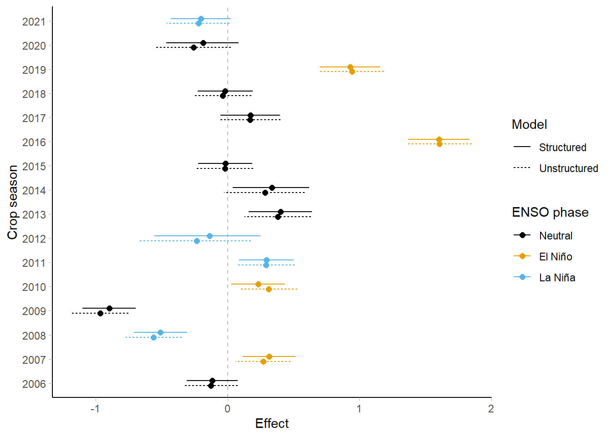
ggsave("figs/bayes_hazard_season.png", dpi = 600, height = 5, width = 4)## Warning: position_dodge requires non-overlapping x intervalsEffect of ENSO
inla_data_enso = inla_data_geral %>%
full_join(ensodata2) %>%
mutate(enso = factor(enso, c("Neutral","El Niño", "La Niña")))## Joining, by = "season"Survival
iid seasons
form_surv_enso1 = inla.surv(days, count) ~ 1 + enso +
f(season, model = "iid", hyper = list(prec = list(param = c(0.001,0.001))))+
f(S, model = "bym2", graph = W.pr_dist200,
hyper = list(prec = list(param = c(0.001, 0.001)),
phi = list(prior = "pc",
param = c(phi.u, phi.alpha),
initial = -3)))
surv_fit_enso1 = inla(form_surv_enso1,
data = inla_data_enso,
family = "coxph",
control.hazard = list(hyper = list(prec = list(param = c(0.001, 0.001)))),
control.compute=list(dic=TRUE,
cpo=TRUE,
waic=TRUE,
openmp.strategy="huge"))
# summary(surv_fit_pr.inla)
# surv_fit_pr.inla <- inla.rerun(surv_fit_pr.inla)
saveRDS(surv_fit_enso1, "./models/model_enso1.RDS")surv_fit_enso1 = readRDS("./models/model_enso1.RDS")
summary(surv_fit_enso1)##
## Call:
## c("inla(formula = cph$formula, family = cph$family, contrasts =
## contrasts, ", " data = c(as.list(cph$data), cph$data.list), quantiles =
## quantiles, ", " E = cph$E, offset = offset, scale = scale, weights =
## weights, ", " Ntrials = NULL, strata = NULL, verbose = verbose, lincomb
## = lincomb, ", " control.compute = control.compute, control.predictor =
## control.predictor, ", " control.family = control.family, control.inla =
## control.inla, ", " control.results = control.results, control.fixed =
## control.fixed, ", " control.mode = control.mode, control.expert =
## control.expert, ", " control.hazard = control.hazard, control.lincomb =
## control.lincomb, ", " control.update = control.update, only.hyperparam
## = only.hyperparam, ", " inla.call = inla.call, inla.arg = inla.arg,
## num.threads = num.threads, ", " blas.num.threads = blas.num.threads,
## keep = keep, working.directory = working.directory, ", " silent =
## silent, debug = debug)")
## Time used:
## Pre = 29.9, Running = 305, Post = 0.724, Total = 336
## Fixed effects:
## mean sd 0.025quant 0.5quant 0.975quant mode kld
## (Intercept) -4.037 0.174 -4.382 -4.037 -3.693 -4.036 0
## ensoEl Niño 0.803 0.278 0.251 0.803 1.355 0.802 0
## ensoLa Niña -0.100 0.280 -0.658 -0.099 0.456 -0.099 0
##
## Random effects:
## Name Model
## season IID model
## S BYM2 model
## baseline.hazard RW1 model
##
## Model hyperparameters:
## mean sd 0.025quant 0.5quant 0.975quant
## Precision for season 5.43e+00 2.17e+00 2.24e+00 5.09e+00 1.06e+01
## Precision for S 2.12e+09 6.06e+10 4.19e+06 1.11e+08 1.20e+10
## Phi for S 2.85e-01 2.50e-01 9.00e-03 2.05e-01 8.70e-01
## Precision for baseline.hazard 3.43e+01 1.29e+01 1.50e+01 3.23e+01 6.51e+01
## mode
## Precision for season 4.43e+00
## Precision for S 7.83e+06
## Phi for S 1.50e-02
## Precision for baseline.hazard 2.86e+01
##
## Expected number of effective parameters(stdev): 28.43(0.494)
## Number of equivalent replicates : 656.50
##
## Deviance Information Criterion (DIC) ...............: 14791.72
## Deviance Information Criterion (DIC, saturated) ....: 9909.71
## Effective number of parameters .....................: 28.43
##
## Watanabe-Akaike information criterion (WAIC) ...: 14790.70
## Effective number of parameters .................: 27.19
##
## Marginal log-Likelihood: -6866.30
## CPO and PIT are computed
##
## Posterior marginals for the linear predictor and
## the fitted values are computedinla.hpdmarginal(0.95, surv_fit_enso1$marginals.fixed$`(Intercept)`)## low high
## level:0.95 -4.381905 -3.694154inla.hpdmarginal(0.95, surv_fit_enso1$marginals.fixed$`ensoEl Niño`)## low high
## level:0.95 0.2509854 1.352712inla.hpdmarginal(0.95, surv_fit_enso1$marginals.fixed$`ensoLa Niña`)## low high
## level:0.95 -0.6576375 0.4544466round(surv_fit_enso1$summary.hyperpar, 4)inla.hpdmarginal(0.95, surv_fit_enso1$marginals.hyperpar$`Precision for season`)## low high
## level:0.95 1.805355 9.694313inla.hpdmarginal(0.95, surv_fit_enso1$marginals.hyperpar$`Precision for S`)## low high
## level:0.95 16023.26 64608269219inla.hpdmarginal(0.95, surv_fit_enso1$marginals.hyperpar$`Phi for S`)## low high
## level:0.95 6.971666e-08 0.8037537inla.hpdmarginal(0.95, surv_fit_enso1$marginals.hyperpar$`Precision for baseline.hazard`)## low high
## level:0.95 12.402 59.72263Plot effect
bind_rows(
as.data.frame(surv_fit_enso1$marginals.fixed$`ensoEl Niño`) %>%
mutate(ENSO = "El Niño"),
as.data.frame(surv_fit_enso1$marginals.fixed$`ensoLa Niña`)%>%
mutate(ENSO = "La Niña")
) %>%
ggplot() +
geom_vline(xintercept = 0, linetype = 2)+
geom_area(aes(x, y, fill = ENSO), alpha = 0.5) +
facet_wrap(~ENSO,
nrow = 2)+
labs(x = "Hazard risk",
y = "Density")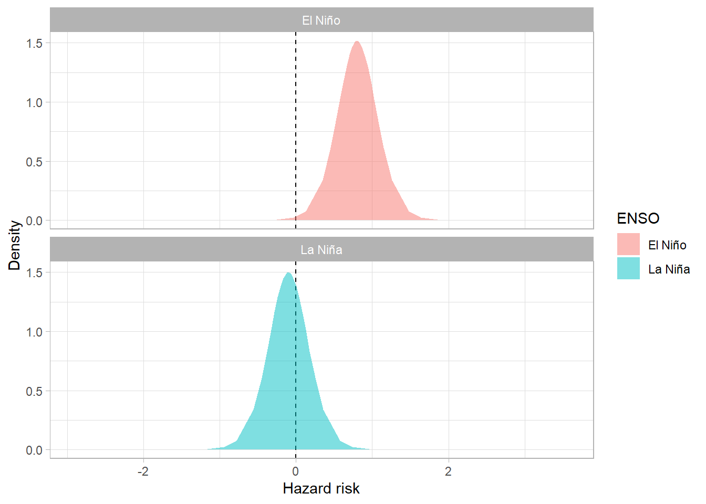
Fitting ONI
OND
form_surv_ONI1 = inla.surv(days, count) ~ 1 + OND +
f(season, model = "iid", hyper = list(prec = list(param = c(0.001,0.001))))+
f(S, model = "bym2", graph = W.pr_dist200,
hyper = list(prec = list(param = c(0.001, 0.001)),
phi = list(prior = "pc",
param = c(phi.u, phi.alpha),
initial = -3)))
surv_fit_ONI1 = inla(form_surv_ONI1,
data = inla_data_enso,
family = "coxph",
control.hazard = list(hyper = list(prec = list(param = c(0.001, 0.001)))),
control.compute=list(dic=TRUE,
cpo=TRUE,
waic=TRUE,
openmp.strategy="huge"))
# summary(surv_fit_pr.inla)
saveRDS(surv_fit_ONI1, "./models/model_oni1.RDS")surv_fit_ONI1 = readRDS("./models/model_oni1.RDS")
summary(surv_fit_ONI1)##
## Call:
## c("inla(formula = cph$formula, family = cph$family, contrasts =
## contrasts, ", " data = c(as.list(cph$data), cph$data.list), quantiles =
## quantiles, ", " E = cph$E, offset = offset, scale = scale, weights =
## weights, ", " Ntrials = NULL, strata = NULL, verbose = verbose, lincomb
## = lincomb, ", " control.compute = control.compute, control.predictor =
## control.predictor, ", " control.family = control.family, control.inla =
## control.inla, ", " control.results = control.results, control.fixed =
## control.fixed, ", " control.mode = control.mode, control.expert =
## control.expert, ", " control.hazard = control.hazard, control.lincomb =
## control.lincomb, ", " control.update = control.update, only.hyperparam
## = only.hyperparam, ", " inla.call = inla.call, inla.arg = inla.arg,
## num.threads = num.threads, ", " blas.num.threads = blas.num.threads,
## keep = keep, working.directory = working.directory, ", " silent =
## silent, debug = debug)")
## Time used:
## Pre = 29.6, Running = 306, Post = 0.862, Total = 336
## Fixed effects:
## mean sd 0.025quant 0.5quant 0.975quant mode kld
## (Intercept) -3.857 0.135 -4.125 -3.857 -3.593 -3.855 0
## OND 0.322 0.097 0.129 0.322 0.514 0.321 0
##
## Random effects:
## Name Model
## season IID model
## S BYM2 model
## baseline.hazard RW1 model
##
## Model hyperparameters:
## mean sd 0.025quant 0.5quant 0.975quant
## Precision for season 5.89e+00 2.27e+00 2.49e+00 5.56e+00 1.13e+01
## Precision for S 1.89e+09 4.79e+10 3.95e+06 1.07e+08 1.08e+10
## Phi for S 2.81e-01 2.49e-01 9.00e-03 2.01e-01 8.68e-01
## Precision for baseline.hazard 3.45e+01 1.29e+01 1.49e+01 3.27e+01 6.50e+01
## mode
## Precision for season 4.89e+00
## Precision for S 7.04e+06
## Phi for S 1.60e-02
## Precision for baseline.hazard 2.90e+01
##
## Expected number of effective parameters(stdev): 28.28(0.516)
## Number of equivalent replicates : 659.84
##
## Deviance Information Criterion (DIC) ...............: 14791.60
## Deviance Information Criterion (DIC, saturated) ....: 9909.60
## Effective number of parameters .....................: 28.32
##
## Watanabe-Akaike information criterion (WAIC) ...: 14790.58
## Effective number of parameters .................: 27.07
##
## Marginal log-Likelihood: -6862.56
## CPO and PIT are computed
##
## Posterior marginals for the linear predictor and
## the fitted values are computedinla.hpdmarginal(0.95, surv_fit_ONI1$marginals.fixed$`(Intercept)`)## low high
## level:0.95 -4.124198 -3.592892inla.hpdmarginal(0.95, surv_fit_ONI1$marginals.fixed$OND)## low high
## level:0.95 0.1291425 0.5135768round(surv_fit_ONI1$summary.hyperpar, 3)inla.hpdmarginal(0.95, surv_fit_ONI1$marginals.hyperpar$`Precision for season`)## low high
## level:0.95 2.044801 10.35979inla.hpdmarginal(0.95, surv_fit_ONI1$marginals.hyperpar$`Precision for S`)## low high
## level:0.95 7638.59 38560381792inla.hpdmarginal(0.95, surv_fit_ONI1$marginals.hyperpar$`Phi for S`)## low high
## level:0.95 1.031507e-07 0.7987937inla.hpdmarginal(0.95, surv_fit_ONI1$marginals.hyperpar$`Precision for baseline.hazard`)## low high
## level:0.95 12.42816 59.80766MJJ
form_surv_ONI2 = inla.surv(days, count) ~ 1 + MJJ +
f(season, model = "iid", hyper = list(prec = list(param = c(0.001,0.001))))+
f(S, model = "bym2", graph = W.pr_dist200,
hyper = list(prec = list(param = c(0.001, 0.001)),
phi = list(prior = "pc",
param = c(phi.u, phi.alpha),
initial = -3)))
surv_fit_ONI2 = inla(form_surv_ONI2,
data = inla_data_enso,
family = "coxph",
control.hazard = list(hyper = list(prec = list(param = c(0.001, 0.001)))),
control.compute=list(dic=TRUE,
cpo=TRUE,
waic=TRUE,
openmp.strategy="huge"))
# summary(surv_fit_pr.inla)
# surv_fit_pr.inla <- inla.rerun(surv_fit_pr.inla)
saveRDS(surv_fit_ONI2, "./models/model_oni2.RDS")surv_fit_ONI2 = readRDS("./models/model_oni2.RDS")
summary(surv_fit_ONI2)##
## Call:
## c("inla(formula = cph$formula, family = cph$family, contrasts =
## contrasts, ", " data = c(as.list(cph$data), cph$data.list), quantiles =
## quantiles, ", " E = cph$E, offset = offset, scale = scale, weights =
## weights, ", " Ntrials = NULL, strata = NULL, verbose = verbose, lincomb
## = lincomb, ", " control.compute = control.compute, control.predictor =
## control.predictor, ", " control.family = control.family, control.inla =
## control.inla, ", " control.results = control.results, control.fixed =
## control.fixed, ", " control.mode = control.mode, control.expert =
## control.expert, ", " control.hazard = control.hazard, control.lincomb =
## control.lincomb, ", " control.update = control.update, only.hyperparam
## = only.hyperparam, ", " inla.call = inla.call, inla.arg = inla.arg,
## num.threads = num.threads, ", " blas.num.threads = blas.num.threads,
## keep = keep, working.directory = working.directory, ", " silent =
## silent, debug = debug)")
## Time used:
## Pre = 29.8, Running = 290, Post = 0.766, Total = 321
## Fixed effects:
## mean sd 0.025quant 0.5quant 0.975quant mode kld
## (Intercept) -3.864 0.142 -4.147 -3.863 -3.584 -3.862 0
## MJJ 0.695 0.257 0.184 0.695 1.206 0.696 0
##
## Random effects:
## Name Model
## season IID model
## S BYM2 model
## baseline.hazard RW1 model
##
## Model hyperparameters:
## mean sd 0.025quant 0.5quant 0.975quant
## Precision for season 4.97e+00 1.94e+00 2.13e+00 4.66e+00 9.62e+00
## Precision for S 2.06e+09 5.66e+10 4.10e+06 1.10e+08 1.17e+10
## Phi for S 2.84e-01 2.50e-01 9.00e-03 2.05e-01 8.71e-01
## Precision for baseline.hazard 3.44e+01 1.29e+01 1.49e+01 3.25e+01 6.48e+01
## mode
## Precision for season 4.08e+00
## Precision for S 7.60e+06
## Phi for S 1.50e-02
## Precision for baseline.hazard 2.89e+01
##
## Expected number of effective parameters(stdev): 28.43(0.493)
## Number of equivalent replicates : 656.49
##
## Deviance Information Criterion (DIC) ...............: 14791.82
## Deviance Information Criterion (DIC, saturated) ....: 9909.81
## Effective number of parameters .....................: 28.44
##
## Watanabe-Akaike information criterion (WAIC) ...: 14790.78
## Effective number of parameters .................: 27.18
##
## Marginal log-Likelihood: -6862.79
## CPO and PIT are computed
##
## Posterior marginals for the linear predictor and
## the fitted values are computedinla.hpdmarginal(0.95, surv_fit_ONI2$marginals.fixed$`(Intercept)`)## low high
## level:0.95 -4.14574 -3.584559inla.hpdmarginal(0.95, surv_fit_ONI2$marginals.fixed$MJJ)## low high
## level:0.95 0.1838507 1.203958round(surv_fit_ONI2$summary.hyperpar, 3)inla.hpdmarginal(0.95, surv_fit_ONI2$marginals.hyperpar$`Precision for season`)## low high
## level:0.95 1.732621 8.785205inla.hpdmarginal(0.95, surv_fit_ONI2$marginals.hyperpar$`Precision for S`)## low high
## level:0.95 12187.15 56875839900inla.hpdmarginal(0.95, surv_fit_ONI2$marginals.hyperpar$`Phi for S`)## low high
## level:0.95 6.40098e-08 0.8042425inla.hpdmarginal(0.95, surv_fit_ONI2$marginals.hyperpar$`Precision for baseline.hazard`)## low high
## level:0.95 12.38649 59.65257JFM
form_surv_ONI3 = inla.surv(days, count) ~ 1 + JFM +
f(season, model = "iid", hyper = list(prec = list(param = c(0.001,0.001))))+
f(S, model = "bym2", graph = W.pr_dist200,
hyper = list(prec = list(param = c(0.001, 0.001)),
phi = list(prior = "pc",
param = c(phi.u, phi.alpha),
initial = -3)))
surv_fit_ONI3 = inla(form_surv_ONI3,
data = inla_data_enso,
family = "coxph",
control.hazard = list(hyper = list(prec = list(param = c(0.001, 0.001)))),
control.compute=list(dic=TRUE,
cpo=TRUE,
waic=TRUE,
openmp.strategy="huge"))
# summary(surv_fit_pr.inla)
# surv_fit_pr.inla <- inla.rerun(surv_fit_pr.inla)
saveRDS(surv_fit_ONI3, "./models/model_oni3.RDS")surv_fit_ONI3 = readRDS("./models/model_oni3.RDS")
summary(surv_fit_ONI3)##
## Call:
## c("inla(formula = cph$formula, family = cph$family, contrasts =
## contrasts, ", " data = c(as.list(cph$data), cph$data.list), quantiles =
## quantiles, ", " E = cph$E, offset = offset, scale = scale, weights =
## weights, ", " Ntrials = NULL, strata = NULL, verbose = verbose, lincomb
## = lincomb, ", " control.compute = control.compute, control.predictor =
## control.predictor, ", " control.family = control.family, control.inla =
## control.inla, ", " control.results = control.results, control.fixed =
## control.fixed, ", " control.mode = control.mode, control.expert =
## control.expert, ", " control.hazard = control.hazard, control.lincomb =
## control.lincomb, ", " control.update = control.update, only.hyperparam
## = only.hyperparam, ", " inla.call = inla.call, inla.arg = inla.arg,
## num.threads = num.threads, ", " blas.num.threads = blas.num.threads,
## keep = keep, working.directory = working.directory, ", " silent =
## silent, debug = debug)")
## Time used:
## Pre = 31.5, Running = 296, Post = 0.728, Total = 328
## Fixed effects:
## mean sd 0.025quant 0.5quant 0.975quant mode kld
## (Intercept) -3.863 0.165 -4.191 -3.862 -3.537 -3.861 0
## JFM 0.076 0.159 -0.239 0.076 0.392 0.076 0
##
## Random effects:
## Name Model
## season IID model
## S BYM2 model
## baseline.hazard RW1 model
##
## Model hyperparameters:
## mean sd 0.025quant 0.5quant 0.975quant
## Precision for season 3.27e+00 1.24e+00 1.42e+00 3.09e+00 6.23e+00
## Precision for S 2.05e+09 5.96e+10 4.03e+06 1.06e+08 1.14e+10
## Phi for S 2.80e-01 2.49e-01 9.00e-03 2.00e-01 8.69e-01
## Precision for baseline.hazard 3.46e+01 1.30e+01 1.51e+01 3.27e+01 6.55e+01
## mode
## Precision for season 2.73e+00
## Precision for S 7.55e+06
## Phi for S 1.60e-02
## Precision for baseline.hazard 2.89e+01
##
## Expected number of effective parameters(stdev): 28.64(0.466)
## Number of equivalent replicates : 651.72
##
## Deviance Information Criterion (DIC) ...............: 14791.96
## Deviance Information Criterion (DIC, saturated) ....: 9909.95
## Effective number of parameters .....................: 28.64
##
## Watanabe-Akaike information criterion (WAIC) ...: 14790.91
## Effective number of parameters .................: 27.36
##
## Marginal log-Likelihood: -6866.65
## CPO and PIT are computed
##
## Posterior marginals for the linear predictor and
## the fitted values are computedinla.hpdmarginal(0.95, surv_fit_ONI3$marginals.fixed$`(Intercept)`)## low high
## level:0.95 -4.190021 -3.537689inla.hpdmarginal(0.95, surv_fit_ONI3$marginals.fixed$JFM)## low high
## level:0.95 -0.2389754 0.3903637round(surv_fit_ONI3$summary.hyperpar, 3)inla.hpdmarginal(0.95, surv_fit_ONI3$marginals.hyperpar$`Precision for season`)## low high
## level:0.95 1.175277 5.711847inla.hpdmarginal(0.95, surv_fit_ONI3$marginals.hyperpar$`Precision for S`)## low high
## level:0.95 10536.6 44998159149inla.hpdmarginal(0.95, surv_fit_ONI3$marginals.hyperpar$`Phi for S`)## low high
## level:0.95 8.79047e-08 0.8000774inla.hpdmarginal(0.95, surv_fit_ONI3$marginals.hyperpar$`Precision for baseline.hazard`)## low high
## level:0.95 12.52881 60.13014Meteorological variables
library(nasapower)nasa_imput = sbr_rep %>%
dplyr::select(season, date_report, lat, lon) %>%
mutate(three_month_before = date_report-90)box_nasa = data.frame()
seasons = unique(sbr_rep$season)
total = 2441
k = 1
pb <- txtProgressBar(min = 0, max = total, style = 3)
for(i in 1:length(seasons)){
s_nasa = nasa_imput %>%
filter(season == seasons[i])
for(j in 1:length(s_nasa$date_report)){
setTxtProgressBar(pb, k)
final_data = as.character(s_nasa$date_report[j])
init_data = as.character(s_nasa$three_month_before[j])
lat_nasa = s_nasa$lat[j]
lon_nasa = s_nasa$lon[j]
lil_box_nasa = get_power(
community = "ag",
temporal_api = "daily",
dates = c(init_data, final_data),
lonlat = c(lon_nasa, lat_nasa),
pars = c("T2M", "RH2M","PRECTOTCORR")
) %>%
mutate(season = seasons[i],
date_report = s_nasa$date_report[j])
box_nasa = box_nasa %>%
bind_rows(lil_box_nasa)
k=k+1
}
# print(seasons[i])
}
print("Data for all coordinates and dates were downloaded")
write.csv(box_nasa, "data/rainfall.csv")box_nasa = read.csv("data/rainfall.csv")
nasa_full = box_nasa %>%
rename(lat = LAT,
lon = LON,
rain = PRECTOTCORR,
temp = T2M,
rh = RH2M) %>%
mutate(season = as.character(season),
date_report = as.Date(date_report),
YYYYMMDD = as.Date(YYYYMMDD)) %>%
full_join(inla_data_enso) %>%
group_by(season,lat, lon, date_report, enso) %>%
mutate(days_to_report = as.numeric(-(max(YYYYMMDD) - YYYYMMDD))) ## Joining, by = c("lon", "lat", "season", "date_report")nasa_full %>%
group_by(season,lat, lon, date_report, enso) %>%
summarise(mean_rain = mean(rain),
cum_rain = sum(rain)) %>%
ggplot(aes(enso,mean_rain, fill = enso))+
stat_slab(alpha = 0.5)+
stat_pointinterval()+
scale_fill_colorblind()+
labs(x = "ENSO phases",
y = "Cummulative rainfall")## `summarise()` regrouping output by 'season', 'lat', 'lon', 'date_report' (override with `.groups` argument)
Rainfall
rain_graph = nasa_full %>%
ggplot(aes(days_to_report, rain, color = enso))+
geom_smooth(method = 'gam',forumula = y ~ s(x, bs = "tp"))+
scale_color_colorblind()+
labs(x = "Days before report",
y = "Rainfall (mm)",
color = "ENSO phases",
title = "Rainfall")+
scale_x_continuous(limits = c(-90,0), breaks = seq(-90,0,by=15))+
theme_half_open(font_size = 12)## Warning: Ignoring unknown parameters: forumularain_graph## `geom_smooth()` using formula 'y ~ s(x, bs = "cs")'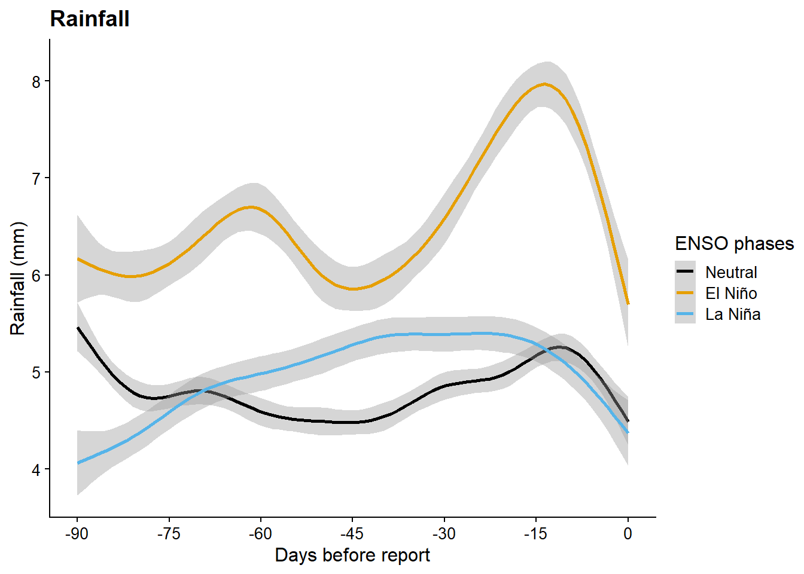
Relative humidity
rh_graph = nasa_full %>%
ggplot(aes(days_to_report, rh, color = enso))+
geom_smooth(method = 'gam',forumula = y ~ s(x, bs = "tp"))+
scale_color_colorblind()+
labs(x = "Days before report",
y = "Relative humidity (%)",
color = "ENSO phases",
title = "Average ralative humidity")+
scale_x_continuous(limits = c(-90,0), breaks = seq(-90,0,by=15))+
theme_half_open(font_size = 12)## Warning: Ignoring unknown parameters: forumularh_graph## `geom_smooth()` using formula 'y ~ s(x, bs = "cs")'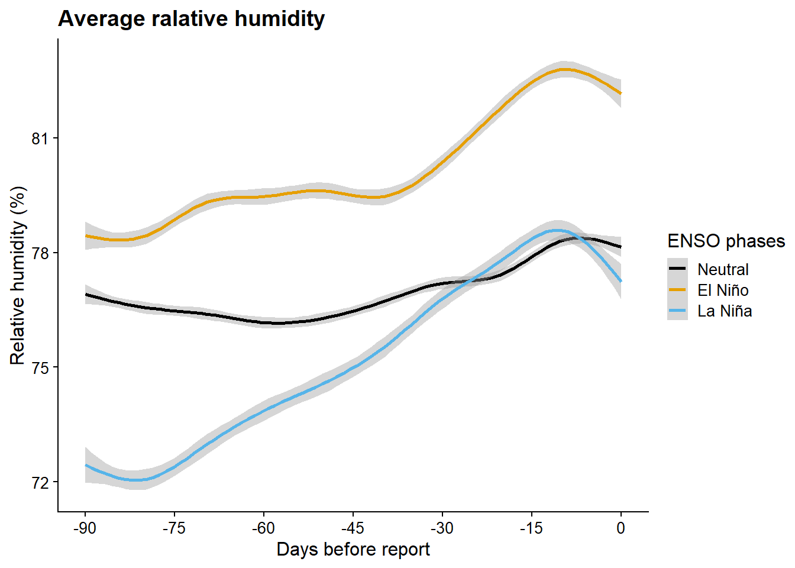
Temperature
temp_graph = nasa_full %>%
ggplot(aes(days_to_report, temp, color = enso))+
geom_smooth(method = 'gam',forumula = y ~ s(x, bs = "tp"))+
scale_color_colorblind()+
labs(x = "Days before report",
y = "Temperature (°C)",
color = "ENSO phases",
title = "Average temperature")+
scale_x_continuous(limits = c(-90,0), breaks = seq(-90,0,by=15))+
theme_half_open(font_size = 12)## Warning: Ignoring unknown parameters: forumulatemp_graph## `geom_smooth()` using formula 'y ~ s(x, bs = "cs")'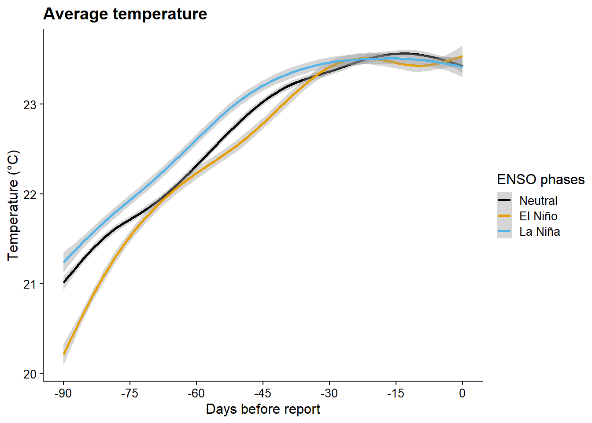
rain_graph + rh_graph +temp_graph+
plot_annotation(tag_levels = "A")+
plot_layout(guides = "collect", ncol = 1)&
geom_vline(xintercept = 0, color = "gray", linetype = 2)&
theme(plot.title = element_text(size = 10),
# legend.position = "bottom"
)## `geom_smooth()` using formula 'y ~ s(x, bs = "cs")'
## `geom_smooth()` using formula 'y ~ s(x, bs = "cs")'
## `geom_smooth()` using formula 'y ~ s(x, bs = "cs")'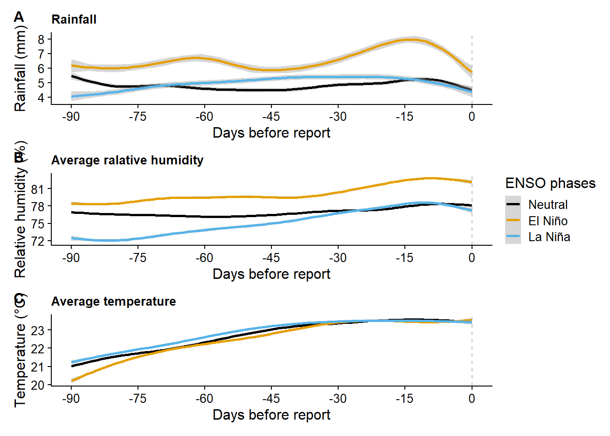
ggsave("figs/met_data.png", dpi = 600, height = 8, width = 5.5)## `geom_smooth()` using formula 'y ~ s(x, bs = "cs")'
## `geom_smooth()` using formula 'y ~ s(x, bs = "cs")'
## `geom_smooth()` using formula 'y ~ s(x, bs = "cs")'inla_data_rain = nasa_full %>%
group_by(season,lat, lon,S, days,count, date_report, enso) %>%
summarise(mean_rain =mean(rain),
cum_rain = sum(rain))## `summarise()` regrouping output by 'season', 'lat', 'lon', 'S', 'days', 'count', 'date_report' (override with `.groups` argument)Modeling
form_surv_rain = inla.surv(days, count) ~ 1 + mean_rain +
f(season, model = "iid", hyper = list(prec = list(param = c(0.001,0.001))))+
f(S, model = "bym2", graph = W.pr_dist200,
hyper = list(prec = list(param = c(0.001, 0.001)),
phi = list(prior = "pc",
param = c(phi.u, phi.alpha),
initial = -3)))
surv_fit_rain = inla(form_surv_rain ,
data = inla_data_rain,
family = "coxph",
control.hazard = list(hyper = list(prec = list(param = c(0.001, 0.001)))),
control.compute=list(dic=TRUE,
cpo=TRUE,
waic=TRUE,
openmp.strategy="huge"))
saveRDS(surv_fit_rain, "./models/model_rain.RDS")surv_fit_rain = readRDS("./models/model_rain.RDS")
summary(surv_fit_rain )MAPS
map_data = sbr_rep_count_new %>%
group_by(lat, lon,MUNIC_PIO) %>%
summarise(count = sum(count))## `summarise()` regrouping output by 'lat', 'lon' (override with `.groups` argument)sul_df %>%
full_join(map_data, by ="MUNIC_PIO") %>%
ggplot()+
geom_sf(data =SUL %>% filter(name != "Brazil"),
size = 3,
fill = "white",
color = "white")+
geom_sf(data = BRA,
size = 0.2,
fill = "white",
color = "black")+
# geom_sf(data = sul_sf, color = "black", size = 0.2, fill = "steelblue")+
geom_polygon(aes(long, lat.x, group =id, fill = count),
color = NA)+
geom_sf(data = sul_sf, color = "black", size = 0.2, fill = NA)+
# geom_point(data = map_data, aes(lon, lat), size = 0.1, color = "black")+
geom_text(data = sul_sf, #%>%
#filter(!postal %in% c("SE", "AL","PE","PB","RN","ES","RJ")),
aes(x = longitude,
y = latitude,
label = postal),size = 5,
fontface = "bold", color = "black")+
coord_equal()+
scale_fill_gradient(low= "white", high = "red", na.value = "white", limits = c(0,17))+
xlim(-57.7,-48)+
ylim(-33.5,-22.5)+
coord_sf()+
labs(x = "Longitude",
y = "Latitude",
fill = "N")+
theme(axis.text.x = element_text(angle = 90, hjust = 1),
legend.position = "bottom",
panel.grid = element_blank(),
panel.background = element_rect(fill = "steelblue"))+
north( location = "bottomright", scale = 0.08, symbol = 10, x.min=-58, x.max=-48.9, y.min=-32.9, y.max=-22.3)+
ggsn::scalebar(location = "bottomright", dist = 100,
dist_unit = "km", transform = TRUE,
x.min=-58, x.max=-48.2, y.min=-33.5, y.max=-22.3,
st.bottom = FALSE, height = 0.01,
st.dist = 0.03, st.size = 2)## Coordinate system already present. Adding new coordinate system, which will replace the existing one.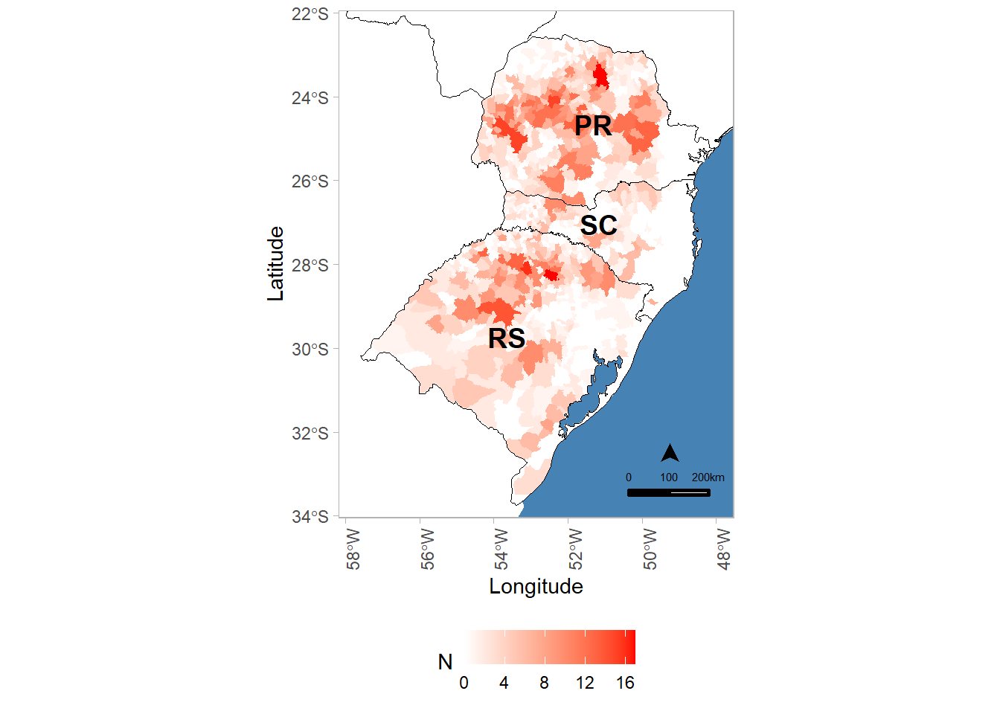
ggsave("figs/fig1_map.png", dpi = 900, height = 6.5, width = 5)cumulative reports
months = c("Sep", "Oct", "Nov", "Dec", "Jan", "Feb", "Mar","Apr","May")
months = unique(sbr_rep$month)
sbr_rep_cummm = data.frame()
for(i in 1:(length(months))){
cumulative = sbr_rep %>%
ungroup() %>%
filter(month <= months[i]) %>%
dplyr::select(season, state, Phen_state, lat_utm, lon_utm, lat, lon, days) %>%
mutate(month = months[i])
sbr_rep_cummm = sbr_rep_cummm %>%
bind_rows(cumulative)
}
sbr_rep_cummm$month = factor(sbr_rep_cummm$month, levels = c("Set", "Oct", "Nov", "Dec", "Jan", "Feb", "Mar","Apr","May"))
Copyright 2017 Emerson Del Ponte